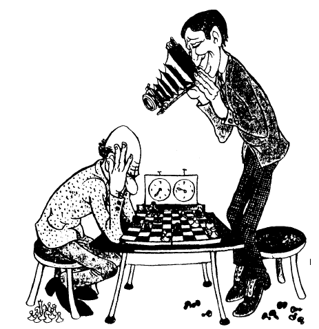
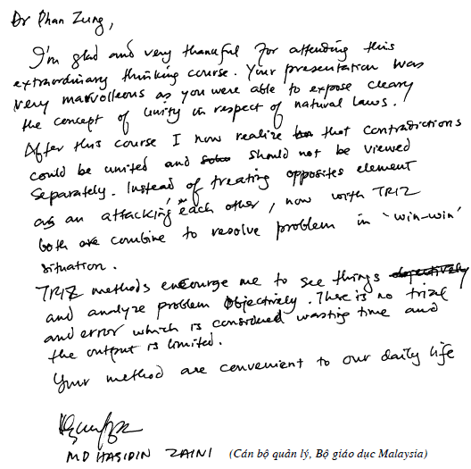

Chương 4 TỔNG QUAN CÁC KẾT QUẢ ĐẠT ĐƯỢC TRONG LĨNH VỰC PHƯƠNG PHÁP LUẬN SÁNG TẠO VÀ ĐỔI MỚI (PPLSTVĐM)
4.1 Một số cách tiếp cận truyền thống và kết quả
Cách đây khoảng ba chục thế kỷ, những người Hy Lạp cổ đại đã rất kính trọng và ngưỡng mộ khả năng sáng tạo của con người như đối với các sức mạnh siêu phàm của thiên nhiên. Họ không chỉ nhân cách hóa các đối tượng, quá trình thiên nhiên thành các vị thần mà còn cả các loại hình sáng tạo của con người thành các vị nữ thần kiểu như thơ thì có Nàng Thơ (nữ thần thi ca). Thành công của các nhà thơ, văn, họa sỹ, bác học… phụ thuộc vào những nữ thần ấy. Do vậy, ở thời kỳ này, câu trả lời cho câu hỏi mà PPLSTVĐM rất quan tâm: “Làm gì để nâng cao năng suất và hiệu quả quá trình sáng tạo của con người?” được đơn giản hóa thành: “Hãy cầu nguyện các vị nữ thần gởi cho các cảm hứng và các ý tưởng sáng tạo”.
Những cố gắng “trần gian” đầu tiên trả lời câu hỏi nói trên thuộc về Democritus (sống khoảng từ năm 460 đến 370 trước công nguyên) và Aristotle (384 – 322 trước công nguyên) khi xây dựng các quy tắc để có được những cái mới nhờ lập luận đúng trong lĩnh vực lôgích học.
Archimedes (287 – 212 trước công nguyên), ngoài những công trình về toán học, vật lý học, còn được biết đến như là tác giả các phương pháp giúp tạo ra các đối tượng mới từ những thành phần chuẩn. Trong số đó, phải kể đến trò chơi gồm 14 miếng có hình dạng khác nhau làm từ ngà voi mà khi thay đổi cách sắp xếp có thể nhận được nhiều đối tượng như mũ, dao găm, thuyền…
Sau khi Pappos khai sinh Heuristics (Sáng tạo học) đến tận thế kỷ 19, những người quan tâm cải tiến cách tư duy, chủ yếu, vẫn tiếp tục là các nhà triết học, lôgích học và toán học. Điều này có thể hiểu được vì những nhà khoa học nói trên phát triển các lĩnh vực của mình bằng các hoạt động tư duy là chính mà không cần phải làm các nghiên cứu thực nghiệm. Hơn ai hết, họ là những người sớm nhất và cảm nhận mạnh mẽ nhất sự cần thiết phải có các phương pháp tư duy sáng tạo với năng suất và hiệu quả cao.
Từ nửa sau thế kỷ 19 bắt đầu xuất hiện những nghiên cứu về tâm lý học sáng tạo khoa học và kỹ thuật, tâm lý học giải quyết vấn đề và ra quyết định. Cũng từ đó, tâm lý học tư duy sáng tạo được coi là cơ sở, hạt nhân của Sáng tạo học.
Các nghiên cứu về tâm lý học sáng tạo được thực hiện theo nhiều hướng. Ở thời kỳ đầu, các nghiên cứu phần lớn tập trung vào những cá nhân có nhiều thành tích sáng tạo để xem họ có những điểm gì đặc biệt hơn những người khác về bẩm sinh, di truyền, các thói quen, các kinh nghiệm… Ví dụ, có nghiên cứu cho thấy mối liên quan giữa một số bệnh tâm lý và các loại hình tài năng, thành phần máu đặc biệt của một số người, các thói quen chủ quan tạo cảm hứng sáng tạo như: Puskin và Balzac rất thích uống cà phê đen. Schiller luôn để trong ngăn bàn làm việc của mình những quả táo… ủng vì cái “mùi nặng” này rất kích thích ông làm việc. Descartes thích tư duy sáng tạo trong chăn. Trái lại, Buffon chỉ suy nghĩ được một cách rõ ràng sau khi mặc quần áo nghiêm chỉnh và cài nút cẩn thận… Chỉ trong thế kỷ 20, qua các kết quả khoa học, các nhà nghiên cứu mới tin rằng những năng khiếu sáng tạo có ở hầu hết, nếu như không nói là tất cả những người bình thường.
Hướng nghiên cứu khác của tâm lý học sáng tạo là nghiên cứu thực nghiệm: nghiên cứu quá trình suy nghĩ sáng tạo giải quyết vấn đề trong các điều kiện phòng thí nghiệm. Các nhà tâm lý làm thí nghiệm với những bài toán và người giải. Họ phát hiện ra rằng những người tham gia thí nghiệm đã giải chúng bằng cách lựa chọn các phương án (phương pháp thử và sai). Quá trình giải phụ thuộc nhiều vào kinh nghiệm trước đó của người giải. Mỗi phương án sai giúp người giải thay đổi cách xem xét bài toán, hiểu bài toán đúng hơn để cuối cùng đưa ra phương án là lời giải thực sự của bài toán. Các bài toán dùng trong các thí nghiệm tâm lý là những bài toán đơn giản, số các phương án thử không nhiều, thời gian dùng để giải bài toán ngắn. Cách tiếp cận như vậy đối với tư duy sáng tạo gặp phải những khó khăn thực tế không vượt qua được. Quá trình sáng tạo thường kéo dài về mặt thời gian. Chính Edison công nhận, trung bình một sáng chế lớn của ông phải làm mất bảy năm. Vậy nhà tâm lý có đủ kiên trì trong suốt 10 năm theo dõi người giải bài toán và tin chắc rằng năm thứ 11 (chứ không phải 12, 13…) anh ta sẽ giải được. Chưa kể, để càng biết chính xác quá trình suy nghĩ của người giải, nhà tâm lý càng phải đặt nhiều câu hỏi. Càng đặt nhiều câu hỏi cho người giải, càng can thiệp sâu vào quá trình suy nghĩ tự nhiên thì kết quả nghiên cứu càng bị sai lệch. Thêm nữa, mặc dù toàn bộ quá trình sáng tạo kéo dài về mặt thời gian nhưng giai đoạn “Eureka” thường diễn ra nhanh đến mức nhà tâm lý không kịp hỏi và có hỏi thì chính người giải cũng không biết sự việc diễn tiến cụ thể như thế nào để trả lời.
Các nhà tâm lý đồng thời cũng phát hiện nhiều yếu tố, quá trình tâm lý, các kiểu suy nghĩ đóng vai trò quan trọng trong tư duy sáng tạo như ngôn ngữ, ký hiệu, hình vẽ, liên tưởng, trí tưởng tượng, linh tính, tư duy phân kỳ (Divergent Thinking), tư duy hội tụ (Convergent Thinking)… và vạch ra tác hại của các loại tính ì tâm lý cản trở sự sáng tạo.
Cùng với sự phát triển các ngành khoa học, kỹ thuật như lý thuyết hệ thống, thông tin, điều khiển học, máy tính điện tử, nhiều chuyên gia của những lĩnh vực đó cũng tham gia nghiên cứu tư duy sáng tạo và có nhiều đóng góp phát triển Sáng tạo học. Đến nay, trong Sáng tạo học nói chung và PPLSTVĐM nói riêng, cộng đồng các nhà nghiên cứu và thực hành rất đa dạng về ngành, nghề được đào tạo xuất phát. Điều này được giải thích, ít nhất, bởi ba lý do. Thứ nhất, sáng tạo có thể xảy ra ở bất kỳ lĩnh vực nào và bất kỳ lĩnh vực nào cũng cần có nhiều sáng tạo. Nói cách khác, sáng tạo như là đối tượng nghiên cứu và tác động được nhiều người thuộc các lĩnh vực khác nhau quan tâm phát triển, không nhất thiết phải là những nhà sáng tạo học chuyên nghiệp. Thứ hai, sáng tạo là đối tượng phức tạp, do vậy, trước khi tìm ra cách tiếp cận nghiên cứu liên ngành, khái quát, tổng hợp, các cách tiếp cận mang tính chất chuyên ngành thường được sử dụng. Thứ ba, số lượng các cơ sở đào tạo ngay từ đầu những người chuyên nghiệp làm việc trong lĩnh vực Sáng tạo học và PPLSTVĐM còn quá ít, học phí còn quá cao, làm cho nhiều người muốn được đào tạo chính quy lại không đủ điều kiện theo học.
Các cách tiếp cận trong Sáng tạo học và PPLSTVĐM có thể chia thành hai nhóm lớn: Nhóm thứ nhất là nhóm tiếp cận truyền thống: lấy con người – chủ thể sáng tạo – làm đối tượng nghiên cứu và quan niệm rằng đi tìm các quy luật sáng tạo là đi tìm các quy luật tư duy sáng tạo của con người. Cách tiếp cận truyền thống được thể hiện bằng Hình 22.

Hình 22: Cách tiếp cận truyền thống trong Sáng tạo học và PPLSTVĐM
Đi vào cụ thể, nhóm tiếp cận truyền thống gồm có: cách tiếp cận theo lôgích học hình thức; cách tiếp cận thuần túy tâm-sinh lý (đặc biệt là tâm lý) của bộ não; cách tiếp cận thuần túy về kinh nghiệm, mẹo, thủ thuật của những người thường xuyên làm công tác sáng tạo (đặc biệt những người có nhiều thành tích sáng tạo cao); cách tiếp cận là tổ hợp của các loại cách tiếp cận nói trên; cách tiếp cận kết hợp những kết quả nghiên cứu về sáng tạo của con người với những ưu việt của máy tính điện tử như bộ nhớ lớn, chính xác, tốc độ biến đổi thông tin nhanh… Cách tiếp cận không truyền thống sẽ được trình bày từ mục 4.2 Cách tiếp cận TRIZ: Các ý tưởng cơ bản đến hết chương này.
Đến nay nhóm tiếp cận truyền thống đã xây dựng được hàng trăm công cụ (hiểu theo nghĩa rộng nhất: mẹo, thủ thuật, lời khuyên, kinh nghiệm, quy tắc, phương pháp, chương trình, thủ tục, algôrit, mô hình…) sáng tạo nhằm cải tiến phương pháp thử và sai. Chúng nhiều khi còn được gọi chung là các phương pháp tích cực hóa tư duy. Nét chung của các phương pháp này là chúng được tạo ra để phát huy các mặt mạnh của các yếu tố, quá trình như suy luận (tiếp nhận, so sánh, phân loại thông tin, diễn dịch, quy nạp, phân tích, tổng hợp…), liên tưởng, trí tưởng tượng, linh tính, ý thức, tiềm thức, vô thức… và hạn chế các mặt yếu của chúng. Nói cách khác, các công cụ này giúp khắc phục một số nhược điểm của phương pháp thử và sai (xem mục 2.3.2 Các nhược điểm của phương pháp thử và sai) như: tính ì tâm lý, năng suất phát ý tưởng thấp, lãng phí lớn và trong một số trường hợp cụ thể, có thể làm tăng tính định hướng của quá trình suy nghĩ giải quyết vấn đề và ra quyết định.
Dưới đây, người viết liệt kê tên một số công cụ thông dụng nhất trong hàng trăm các công cụ tư duy sáng tạo giải quyết vấn đề và ra quyết định tìm ra nhờ những cách tiếp cận truyền thống:
Phương pháp đối tượng tiêu điểm (Method of Focal Objects hoặc Forced - Relationships). Phương pháp này được giáo sư Đại học tổng hợp Berlin F. Kunze đưa ra dưới dạng ban đầu với tên gọi phương pháp danh mục (catalogue) năm 1926. Vào những năm 1950, phương pháp được nhà bác học Mỹ C. Whiting hoàn thiện thêm.
Phương pháp phân tích hình thái (Morphological Analysis) do F. Zwicky – nhà vật lý thiên văn người Mỹ gốc Thụy Sĩ đưa ra năm 1942.
Phương pháp các câu hỏi kiểm tra (Method of Control Questions hoặc Check - listing Method) gồm nhiều loại danh sách các câu hỏi kiểm tra do nhiều tác giả lập ra, dành giải quyết các vấn đề của những lĩnh vực tương ứng. Ví dụ, danh sách các câu hỏi kiểm tra của G. Polya (1945), A. Osborn (1953), T. Eiloart (1969).
Phương pháp não công (Brainstorming Method) được A. Osborn, nhà doanh nghiệp người Mỹ đưa ra năm 1938.
Synectics (Phương pháp sử dụng các phép tương tự). Các nghiên cứu Synectics đã có từ năm 1944. Năm 1952, W. Gordon thành lập nhóm Synectics đầu tiên. Năm 1960 nhóm này trở thành công ty “Synectics Incorporated” có trụ sở đặt tại Cambridge, bang Massachusetts, Mỹ. Công ty nhận đơn đặt hàng của các công ty khác để giải quyết các vấn đề của họ và huấn luyện các nhóm sáng tạo chuyên nghiệp cho họ.
Phương pháp bản đồ trí óc (Mind - mapping Method) được nhà thần kinh học người Anh T. Buzan xây dựng vào những năm 1970.
Tư duy chiều ngang (Lateral Thinking) do E. De Bono đưa ra đầu những năm 1970.
Sáu chiếc mũ tư duy (Six Thinking Hats) cũng do E. De Bono đưa ra vào năm 1985.
Sơ đồ xương cá (Fishbone Diagram) được nhà nghiên cứu người Nhật K. Ishikawa thành lập năm 1943.
Sơ đồ Pareto (The Pareto Diagram) do nhà kinh tế học người Ý V. Pareto sáng chế ra.
Phương pháp tư duy định hướng (Метод направленного мышления) của N.I. Xeređa, người Nga, đưa ra năm 1961.
Phương pháp bảy lần tìm kiếm (Метод семикратного поиска) của G. Ia. Bush, người Nga, đưa ra năm 1964.
Phương pháp các thủ thuật heuristic (Метод эвристических приѐмов) của A.I. Polovinkin, người Nga, đưa ra năm 1969.
Phương pháp tiếp cận lôgích – hệ thống giải các bài toán sáng chế (Метод системно – логического подхода к решению изобретательских задач) của V.X. Shubin, người Nga, đưa ra năm 1972.
Phương pháp các ma trận tìm kiếm bậc mười (Метод десятичных матриц поиска) của R.P. Povileiko, người Nga, đưa ra năm 1972.
Quá trình giải quyết vấn đề sáng tạo (Creative Problem Solving Process) lần đầu tiên được A. Osborn đưa ra vào cuối những năm 1940 và được các cộng tác viên của Trung tâm nghiên cứu sáng tạo, Đại học Buffalo, bang New York, Mỹ phát triển tiếp cho đến nay.
Phương pháp phân tích giá thành – chức năng (Функционально – Стоимостной Анализ) gọi theo tiếng Nga, hoặc phương pháp phân tích giá trị (Value Analysis) gọi theo tiếng Anh, được đưa ra vào cuối những năm 1940.
Quá trình hợp lý giải quyết vấn đề và ra quyết định (Problem Solving and Decision Making Rational Process) do C.H. Kepner và B.B. Tregoe đưa ra đầu những năm 1970. Công ty Kepner–Tregoe, Inc. được thành lập tại thành phố Princeton, bang New Jersey, Mỹ nhằm phổ biến phương pháp này.
Công cụ ưu thế não của Herrmann (Herrmann Brain Dominance Instrument) do N. Herrmann, nhà vật lý người Mỹ đưa ra năm 1988. Ông cũng là người thành lập The Ned Herrmann Group ở thành phố Lake Lure, bang North Carolina.
Mô hình IDEAL giải quyết vấn đề (IDEAL Model for Problem Solving) được J.D. Bransford và B.S. Stein, người Mỹ xây dựng, đưa ra năm 1993.
Nhóm các phương pháp sáng tạo được máy tính hỗ trợ (Computer Assisted Creativity Methods).
Trong quyển sáu của bộ sách “Sáng tạo và đổi mới”, người viết sẽ trình bày chi tiết một số trong các công cụ vừa nêu ở trên.
4.2 Cách tiếp cận TRIZ: Các ý tưởng cơ bản
Cách tiếp cận không truyền thống đem lại những kết quả phong phú, thành công nhất trong lĩnh vực PPLSTVĐM được thể hiện rất tập trung trong “Lý thuyết giải các bài toán sáng chế (TRIZ)” với G.S. Altshuller là tác giả (xem mục 3.1 Từ Heuristics đến Creatology: Vài nét lịch sử và các Phụ lục 1, 2, 3). Trong mục này, người viết trình bày tóm tắt các ý tưởng cơ bản dẫn đến việc xây dựng TRIZ.
4.2.1 Các quy luật sáng tạo phải tìm chính là các quy luật phát triển
Theo định nghĩa, sáng tạo phải có tính mới (xem mục 1.2 Một số khái niệm cơ bản và các ý nghĩa của chúng). Điều này phản ánh: sáng tạo tạo ra sự thay đổi, tạo ra những cái khác với những gì đã có. Tuy nhiên, không phải sự thay đổi nào cũng là sáng tạo vì sáng tạo đòi hỏi sự thay đổi phải đồng thời đem lại ích lợi. Tương tự như vậy, sáng tạo tạo ra sự đa dạng (sự khác nhau), làm tăng tính đa dạng. Ví dụ, nhờ sáng tạo, chúng ta càng ngày càng có nhiều loại bút, dao, kéo, bàn, ghế, xe, máy tính… khác nhau. Tuy nhiên, không phải sự đa dạng nào cũng là sáng tạo nếu như sự đa dạng đó không đem lại ích lợi.
Người ta cũng dễ dàng nhất trí với nhau rằng sáng tạo tạo ra sự phát triển. Đến đây, bắt đầu nảy sinh ý mới so với hai ý (thay đổi và đa dạng nói trên). Phát triển, hiểu theo nghĩa tốt đẹp của từ này, ngoài tính mới (khác với cái cũ, cái đã có, cái đã biết), phát triển phải có những ích lợi, những tiến bộ, những hoàn thiện hơn cái cũ, cái đã có, cái đã biết. Nói cách khác, sáng tạo tạo ra sự phát triển và ngược lại trong sự phát triển có sáng tạo. Vậy, theo G.S. Altshuller, đi tìm các quy luật sáng tạo chính là đi tìm các quy luật phát triển.
Trong khi các cách tiếp cận truyền thống quan niệm: đi tìm các quy luật sáng tạo là đi tìm các quy luật tư duy sáng tạo (các quy luật tâm-sinh lý của bộ não con người, xem Hình 22: Cách tiếp cận truyền thống trong Sáng tạo học và PPLSTVĐM) thì G.S. Altshuller đòi hỏi sự nghiên cứu rộng hơn nhiều.
Từ Vụ nổ lớn (Big Bang) đến nay, vũ trụ nói chung và sau này Trái Đất của chúng ta (bao gồm tự nhiên, xã hội, tư duy) nói riêng đã trải qua biết bao tiến hóa và phát triển. Sự tiến hóa và phát triển này diễn ra theo những quy luật khách quan nhất định. Chúng có thể và cần phải được nhận thức. Về mặt nguyên tắc, nhà sáng tạo học phải nghiên cứu tất cả các thông tin phản ánh sự phát triển nói trên (kể cả những phát triển không có sự tham gia của con người) để tìm ra các quy luật phát triển khách quan chung làm cơ sở xây dựng PPLSTVĐM. Điều này giải thích vì sao trong định nghĩa khái niệm sáng tạo (xem mục 1.2 Một số khái niệm cơ bản và các ý nghĩa của chúng), từ “hoạt động” được dùng với nghĩa rất rộng, chứ không phải nghĩa hẹp “hoạt động” của riêng con người. Đấy chính là “hoạt động tạo ra sự phát triển của bất kỳ đối tượng nào” và sự phát triển là thuộc tính của vật chất (hiểu theo nghĩa triết học).
4.2.2 Sáng tạo của con người: Khía cạnh chủ quan và khía cạnh khách quan
Những sáng tạo của con người, một mặt, mang tính chủ quan vì chúng được tạo ra bởi những con người cụ thể. Mặt khác, những sáng tạo của con người được tự nhiên, xã hội tiếp nhận một cách đầy đủ, ổn định và bền vững mới là những sáng tạo, tạo ra sự phát triển thực sự. Tuy sự phát triển loại này do con người tạo ra nhưng nó vẫn phải tuân theo các quy luật phát triển khách quan chung, bao trùm cả ba lĩnh vực: tự nhiên, xã hội, tư duy và không phụ thuộc vào con người cụ thể.
Đề cập tư duy sáng tạo, những nhà nghiên cứu đi theo cách tiếp cận truyền thống thường nghĩ ngay đến quá trình tâm lý xảy ra bên trong bộ óc người giải bài toán, tập trung mọi chú ý vào đó (xem Hình 22) và suy ra rằng, đi tìm các quy luật sáng tạo tức là đi tìm các quy luật tâm lý chủ quan ấy. Chúng ta thử tưởng tượng tình huống sau:
Chiếc ô tô đi trên con đường với đoạn AB là thẳng và đoạn BC quanh co, uốn khúc, lên dốc, xuống đèo (xem Hình 23). Trên xe có người lái xe và người nghiên cứu. Nhiệm vụ của người nghiên cứu là quan sát, mô tả, tìm hiểu xem: nhờ đâu mà người lái xe có thể đưa xe đi từ A đến B, từ B đến C và rút ra những kết luận cần thiết. Sau đây là bản báo cáo của người nghiên cứu theo cách tiếp cận truyền thống sau chuyến đi:

Hình 23: Khía cạnh chủ quan và khía cạnh khách quan trong sáng tạo của con người
“Tôi ngồi bên cạnh người lái xe suốt chặng đường từ B đến C, mắt không rời anh ta một giây. Do đó, những điều tôi quan sát được là tuyệt đối đầy đủ. Rõ ràng người lái xe này là người ham hoạt động hơn những lái xe khác mà tôi gặp, ít ra cũng so với những lái xe đưa tôi đi từ A đến B, vì tôi thấy anh hết đánh vô-lăng sang phía bên này lại đánh vô-lăng sang phía bên kia. Không những thế anh còn sang số và thay đổi tốc độ liên tục. Mặt trời lúc thì chiếu sáng má phải của anh, lúc thì má trái. Tốc độ gió lùa vào xe cũng thay đổi. Điều này cho phép tôi giả thiết là anh không chỉ ham hoạt động mà còn thích sưởi nắng cho thật đều khuôn mặt của mình. Sự thay đổi tốc độ gió lùa vào xe là sự thể hiện cảm hứng của người lái xe. Tóm lại, qua nghiên cứu nhiều người lái xe trên nhiều đoạn đường, tôi thấy họ rất đa dạng, tuy nhiên có thể nhấn mạnh điểm chung, đáng lưu ý: họ thích sưởi nắng, thích hưởng gió mát theo sở thích riêng của mình. Không nghi ngờ gì nữa, kết luận trên có thể coi là điều khẳng định, được chứng minh rõ ràng. Từ đó suy ra: để người lái xe làm việc tốt cần tạo điều kiện để họ thỏa mãn các sở thích riêng”.
Tình huống và bản báo cáo tưởng tượng nói trên phản ánh sự tương tự với những tình huống, ở đó nhà tâm lý nghiên cứu xem người giải suy nghĩ và hành động như thế nào để đi từ bài toán đến lời giải (như những người lái xe đưa xe đi từ A đến B, từ B đến C). Chúng ta hãy cùng “mổ xẻ” chúng:
Người lái xe, muốn lái xe đến đích phải nhìn rõ đường và đưa xe đi đúng tuyến đường. Con đường đối với người lái xe là khách quan, độc lập đối với anh ta. Trên đoạn đường BC quanh co uốn khúc, lên dốc xuống đèo, người lái xe không thể làm gì khác hơn là phải bẻ tay lái, lúc sang trái, lúc sang phải và thay đổi số nhiều lần… Người nghiên cứu theo cách tiếp cận truyền thống không chú ý đến khía cạnh khách quan đó mà chỉ tập trung vào người lái xe (khía cạnh chủ quan) theo kiểu “mắt không rời anh ta một giây” (xem Hình 22). Nhà nghiên cứu xem những hoạt động tư duy – tâm lý của người lái xe là điều quyết định để lái được xe từ B đến C, thậm chí, lầm lẫn giữa bản chất và hiện tượng (“thích sưởi nắng cho thật đều khuôn mặt của mình”, “cần tạo điều kiện để họ thỏa mãn các sở thích riêng”).
Khái quát hóa lên, ta có thể coi trong sáng tạo của con người có hai khía cạnh: chủ quan và khách quan. Trong đó, những quy luật phát triển khách quan của sự vật là gốc, tương tự như con đường đối với người lái xe: anh phải đi theo tôi, nếu không anh sẽ không đến đích, thậm chí bị tai nạn. Ví dụ, trên đoạn đường thẳng AB, người lái xe nếu “hết đánh vô lăng sang phía bên này lại đánh vô lăng sang phía bên kia” thì không chỉ lạc đường, xe có thể lăn xuống ruộng. Ở đoạn BC quanh co, uốn khúc, lên dốc, xuống đèo, nếu người lái xe giữ tay lái thẳng thì xe đâm xuống vực. Phải chăng phương pháp thử và sai (xem các mục 2.2Phương pháp thử và sai và 2.3 Các ưu và nhược điểm của phương pháp thử và sai) có nhiều phép thử – sai mò mẫm với những “trả giá”, “tai nạn” của người giải trước khi đi đến lời giải đúng của bài toán là do người giải không nhìn thấy con đường – quy luật phát triển khách quan.
G.S. Altshuller cho rằng các nhà sáng tạo học phải ưu tiên đi tìm những quy luật phát triển khách quan (những con đường) và người sáng tạo tốt là người sau khi nắm các quy luật nói trên biết điều khiển tư duy và hành động đi theo chúng, tương tự như người lái xe thấy rõ đường và đưa xe đi đúng đường. Về điều này, Lê-nin đã từng nhắc nhở: “Biện chứng của sự vật (khách quan – người viết nhấn mạnh) tạo lập biện chứng của ý tưởng (chủ quan – người viết nhấn mạnh), chứ không phải ngược lại”.
4.2.3 Cơ chế định hướng và tư duy định hướng
Trong các nhược điểm của phương pháp thử và sai (xem mục 2.3.2 Các nhược điểm của phương pháp thử và sai) có nhược điểm “thiếu cơ chế định hướng từ bài toán đến lời giải”.
Giả sử chúng ta đã tìm ra cơ chế định hướng rồi (xem Hình 24), thì sao?
Hình 24: Phương pháp thử và sai cần cơ chế định hướng
Rõ ràng lúc đó, người giải chỉ cần tập trung thử những phép thử theo chiều của cơ chế định hướng, không thử những phép thử ngược với cơ chế định hướng. Nói cách khác, nhược điểm “lãng phí lớn” được khắc phục một cách đáng kể.
Mặt khác, vì biết lời giải nằm ở hướng nào, người giải có được “chuẩn”, “điểm tựa” để không cho tính ì tâm lý lôi kéo suy nghĩ của mình về phía quen thuộc, đã biết. Nói cách khác, cơ chế định hướng giúp khắc phục nhược điểm “tính ì tâm lý cản trở sáng tạo”.
Nhờ cơ chế định hướng, nhược điểm “năng suất phát ý tưởng thấp” cũng được khắc phục. Bởi vì, cơ chế định hướng làm cho việc phải có thật nhiều ý tưởng để tăng xác suất có ý tưởng dẫn đến lời giải, không còn cần thiết nữa. Điều này cũng tương tự như không có định hướng, để trúng mục tiêu thì phải ném bom trải thảm, một quả trong số đó có thể trúng mục tiêu. Định hướng tốt, lúc đó chỉ cần một tên lửa thông minh.
Cũng chính cơ chế định hướng giúp người giải có những tiêu chuẩn khách quan để đánh giá “đúng”, “sai”.
Như vậy, nhược điểm “thiếu cơ chế định hướng từ bài toán đến lời giải” là nhược điểm cơ bản nhất của phương pháp thử và sai và là thủ phạm chính làm nảy sinh những nhược điểm khác.
Theo G.S. Altshuller, chính các quy luật phát triển khách quan, khi được phản ánh trong tư duy của người giải bài toán, sẽ đóng vai trò cơ chế định hướng nói trên. Nói cách khác, các cách tiếp cận truyền thống, chủ yếu, nhắm vào khắc phục các nhược điểm không phải cơ bản nhất của phương pháp thử và sai như “tính ì tâm lý cản trở sáng tạo”, “năng suất phát ý tưởng thấp”. TRIZ tập trung nỗ lực vào việc xây dựng cơ chế định hướng từ bài toán đến lời giải và càng ngày càng hoàn thiện cơ chế đó nhằm giúp người giải bài toán có tư duy định hướng. Hình 25 cho thấy hình ảnh lý tưởng của cơ chế định hướng: lúc này chỉ cần một phép thử là chắc chắn có lời giải.
Hình 25: Cơ chế định hướng lý tưởng
Người ta thường chỉ tiệm cận đến cái lý tưởng trong trường hợp chung. Tuy nhiên, trong một số trường hợp cụ thể, người ta có thể đạt được lý tưởng. Điều này đã xảy ra trên thực tế, trước khi có TRIZ. Ví dụ, trước đây khi cần giải phương trình bậc hai:
\(ax^2 + bx + c = 0\) (1)
người ta cần biến đổi thành phương trình tích:
\((x − d)(x − e) = 0\) (2)
từ đó rút ra nghiệm \(x_1 = d\) và \(x_2 = e\)
Ở thời kỳ này, phương pháp thông dụng để biến phương trình (1) thành phương trình (2) là phương pháp thử và sai, phụ thuộc rất nhiều vào “tư chất” của người giải và các con số a, b, c cụ thể. Để đi đến lời giải, số lượng các phép thử – sai có thể rất lớn.
Sau khi có “cơ chế định hướng”, người giải bằng “tư duy định hướng” chỉ cần thực hiện một phép thử là chắc chắn dẫn đến lời giải. Phép thử đó là:
\[\Delta=b^{2}-4 a c\] \[x_{1}=\frac{-b+\sqrt{\Delta}}{2 a} \quad ; \quad x_{2}=\frac{-b-\sqrt{\Delta}}{2 a}\]
4.2.4 Phát triển của con người: Năng lực cơ thể hay/và công cụ
Trong thế giới sinh vật, sự tiến hóa và phát triển của các loài vật, trước hết và chủ yếu là sự tiến hóa và phát triển các năng lực cơ thể để, một mặt, thích nghi hơn với môi trường (nếu môi trường không thay đổi), mặt khác, đối phó với những thay đổi của môi trường. Sự phát triển tự nhiên kiểu này diễn ra rất dài về mặt thời gian. Ví dụ, tổ tiên của loài ngựa là một loại thú nhỏ, chân có năm ngón, những ngón đó lại có vuốt nhọn, giúp ích cho nó đi dễ dàng trên mặt đất gồ ghề trong rừng. Khi các rừng cây thưa thớt dần, nhường chỗ cho các thảo nguyên, tổ tiên của ngựa bắt buộc phải đi ra những chỗ trống trải. Ở đó, nếu gặp nguy thì không có chỗ ẩn nấp: chỉ còn cách thoát nạn là chạy trốn. Các bộ phận cơ thể của tổ tiên ngựa dần thay đổi: chân dài ra, chỉ còn lại có một ngón với móng rất cứng để chạy nhanh. Tương ứng với chân dài, cổ cũng dài ra để gặm được cỏ. Răng ngựa cũng biến đổi để có thể nghiền nát nhanh những thứ cỏ cứng mọc trên thảo nguyên. Sự phát triển các năng lực cơ thể của ngựa như chân, cổ và hàm răng đã trải qua thời gian năm mươi triệu năm mới hoàn thành và trả giá bằng rất nhiều cá thể bị chọn lọc tự nhiên đào thải.
Tổ tiên của con người với tư cách động vật, lúc đầu cũng phát triển theo cách tự nhiên nói trên nhờ biến dị, di truyền, sàng lọc một cách mò mẫm, bị động và kéo dài về mặt thời gian. Bước ngoặt xảy ra khi con người bắt đầu sử dụng các công cụ là những phương tiện nằm ngoài cơ thể người. Những công cụ đầu tiên là những công cụ trong thiên nhiên như lửa từ núi lửa hay những đám cháy rừng, hòn đá, cành cây có sẵn với hình dạng thích hợp được hoàn thiện thêm đôi chút. Lúc này, phát triển của con người bao gồm cả phát triển các năng lực của cơ thể và công cụ. Tiếp theo, con người tự sáng chế ra các công cụ (hiểu theo nghĩa rộng nhất) không có sẵn trong thiên nhiên với hàm lượng tri thức ngày càng cao.
Thực tế phát triển của con người cho thấy, những thành tựu đạt được qua các thời đại, chủ yếu, là nhờ con người sáng chế ra và làm việc bằng các công cụ ngày càng hoàn thiện hơn trước chứ không phải do năng lực cơ thể (tâm-sinh lý) của con người cao hơn trước. Nếu loài người đứng trước sự lựa chọn: nâng cao năng lực cơ thể hoặc chế tạo công cụ, loài người chọn cách thứ hai để có được sự phát triển rộng rãi và nhanh chóng. Ví dụ, để giải quyết vấn đề đi nhanh, loài người không đi theo hướng nghiên cứu cơ thể để đề ra các phương pháp luyện tập nhằm đạt mục đích đi nhanh (nếu có, chỉ dành cho một số rất ít người là các vận động viên thể thao). Loài người sáng chế ra các công cụ là các loại xe mà bất kỳ người bình thường nào cũng có thể sử dụng để đi nhanh. Tương tự như vậy, để nhìn xa, loài người không đi theo hướng nghiên cứu mắt và xây dựng các phương pháp luyện tập mắt để làm tăng năng lực của mắt mà chế tạo ra công cụ là ống nhòm. Lúc này, mỗi người bình thường chỉ cần đưa ống nhòm lên mắt là lập tức nhìn rất xa.
Có vài điểm cần đặc biệt lưu ý đối với việc loài người nghiên cứu và phát triển công cụ. Thứ nhất, nguyên lý hoạt động của công cụ chủ yếu và thường được xây dựng dựa trên các quy luật khách quan độc lập với cơ thể của con người. Ví dụ, nguyên lý hoạt động của ống nhòm dựa trên các quy luật về quang hình học, nguyên lý hoạt động của các động cơ nhiệt dựa trên các quy luật nhiệt động lực học. Thứ hai, chỉ đến giai đoạn chuẩn bị đưa công cụ ra áp dụng đại trà, các nhà thiết kế mới tính đến những đặc điểm cơ thể của con người sử dụng công cụ.
Từ những gì trình bày ở trên, cách tiếp cận của TRIZ: xây dựng PPLSTVĐM dựa trên các quy luật phát triển khách quan độc lập với cơ thể con người, rõ ràng phù hợp với cách xây dựng công cụ của loài người hơn là những cách tiếp cận truyền thống. Nói như vậy, không có nghĩa các quy luật tâm – sinh lý bị bỏ qua. Trái lại, các quy luật tâm – sinh lý quan trọng ở chỗ, giúp các nhà nghiên cứu thiết kế, xây dựng PPLSTVĐM thân thiện với người sử dụng, hiểu theo nghĩa, phù hợp với những đặc thù của tâm – sinh lý con người. Mặt khác, các quy luật tâm – sinh lý còn giúp người sử dụng PPLSTVĐM biết cơ sở tâm – sinh lý của tư duy để có thể điều khiển tư duy của mình phát các ý tưởng sáng tạo và đổi mới hướng theo các quy luật khách quan về sự phát triển sự vật, chứ không phải phát các ý tưởng bị chi phối bởi các yếu tố tâm – sinh lý chủ quan.
4.2.5 Quan hệ giữa tài năng và công cụ
Tài năng của một người cụ thể thường được hiểu là khả năng của người đó thực hiện một công việc cho trước xuất sắc hơn hẳn những người khác. Ở thời kỳ chưa có công cụ hoặc ở những lĩnh vực không được phép dùng công cụ như một số môn thể thao (chạy, bơi, đá bóng…), hát, múa…, tài năng chính là những năng lực cơ thể ở mức độ cao. Những tài năng kiểu này có được là nhờ bẩm sinh hoặc nhờ luyện tập một cách đặc biệt công phu mà không phải ai cũng có thể theo đến cùng được. Theo G.S. Altshuller, sự xuất hiện của công cụ và việc loài người chọn phát triển công cụ là con đường phát triển xã hội chứ không phải phát triển các năng lực cơ thể, làm thay đổi cách hiểu về tài năng nói trên.
Chúng ta thử tưởng tượng ở thời kỳ lịch sử chưa có công cụ là cái com-pa, người ta tổ chức cuộc thi vẽ vòng tròn bằng tay không, xem ai vẽ vòng tròn tròn nhất. Khả năng vẽ vòng tròn bằng tay không ở những người khác nhau là khác nhau: người vẽ vòng tròn như quả trứng, người vẽ méo xẹo, người không nối kín được hai đầu nét vẽ lại với nhau… Lúc đó, ai vẽ vòng tròn tròn nhất được đánh giá là có tài năng (năng lực cơ thể) cao nhất. Sau khi com-pa (công cụ) được sáng chế ra, bất kỳ người bình thường nào, trải qua huấn luyện và luyện tập mà ai cũng có thể tiếp thu được, đều vẽ vòng tròn tròn nhất một cách dễ dàng. Nói cách khác, công cụ giúp san bằng tài năng đã có, giúp tất cả những người bình thường có thể làm được công việc, trước đó chỉ có những người tài năng mới làm được.
Có công cụ rồi, xuất hiện khái niệm tài năng cụ thể mới. Chẳng hạn, khi đã có com-pa, người ta mở cuộc thi xem ai trong một phút vẽ được nhiều vòng tròn nhất. Khả năng dùng com-pa vẽ vòng tròn nhanh ở những người khác nhau thì khác nhau. Người vẽ nhiều vòng tròn nhất trong thời gian một phút, ở thời kỳ lịch sử mới, được đánh giá có tài năng nhất. Bạn đọc có thể đoán ra, người đó chưa chắc đã phải là người vẽ vòng tròn bằng tay không tròn nhất ở thời kỳ lịch sử cũ. Như vậy, công cụ không chỉ san bằng tài năng (vẽ tròn), thay đổi nội dung tài năng cụ thể (vẽ tròn thành vẽ nhanh) mà còn đào thải và làm đổi ngôi tài năng: Người vẽ vòng tròn bằng tay không tròn nhất không còn được xã hội đánh giá cao, thậm chí, có khi thất nghiệp ở thời kỳ lịch sử mới với những người khác được coi là tài năng. Ở đây, rất cần loại khả năng sử dụng các công cụ mới một cách thành thạo nhất có thể có.
Khi chưa có công cụ, các bộ phận trên cơ thể người phải thực hiện các chức năng sau: 1) Tạo ra năng lượng; 2) Truyền dẫn năng lượng đó đi khắp các bộ phận để cơ thể hoạt động; 3) Các chức năng làm việc như chân đi, tay nắm bắt, các giác quan tiếp nhận thông tin; 4) Điều khiển cơ thể; 5) Sáng tạo.
Những công cụ thủ công đầu tiên như hòn đá, cái gậy đánh dấu con người bắt đầu chuyển giao chức năng làm việc cho công cụ. Chiếc máy đầu tiên thực hiện các chức năng 1, 2, 3, sử dụng năng lượng ngoài cơ thể, có bộ phận truyền động và bộ phận làm việc của mình, đánh dấu bắt đầu giai đoạn cơ khí hóa. Lúc này, con người còn giữ lại chức năng điều khiển (kể cả điều khiển công cụ) và sáng tạo. Sang giai đoạn tự động hóa, con người dần chuyển giao phần chức năng điều khiển công cụ cho chính công cụ.
Các công cụ nói trên không chỉ giúp khai thác tốt hơn, thay đổi, khuếch đại các năng lực của cơ thể mà còn tạo ra những năng lực mới. Ví dụ, năng lực cơ thể không làm cho con người bay được nhưng máy bay (công cụ) lại làm cho con người bay cao, bay xa, bay nhanh hơn bất cứ loài chim nào.
PPSLTVĐM là hệ thống các công cụ dành cho chức năng thứ năm: Sáng tạo, chính xác hơn, tư duy sáng tạo. Những công cụ này giống những công cụ đã có về các mặt sau: Được xây dựng dựa trên các quy luật khách quan; có thể dạy và học cách sử dụng cho đông đảo mọi người; đem lại các ích lợi lớn cho người sử dụng. Khi nói “đem lại các ích lợi lớn cho người sử dụng PPLSTVĐM”, bạn đọc không nên nghĩ rằng, nhờ PPLSTVĐM, người sử dụng sẽ trở thành Edison, Newton, Einstein. Đúng hơn, bạn nên quan niệm thế này, trước đây đi bộ nên tốc độ đạt được là 4 km/giờ. Nay nhờ công cụ là cái xe đạp, mình đi nhanh hơn trước, ví dụ, 10 km/giờ. Nếu mình luyện tập sử dụng xe đạp tốt hơn, mình sẽ đi nhanh hơn nữa. Tuy vậy, không nên ảo tưởng rằng với cách sử dụng xe đạp ngày càng tốt, bạn sẽ đạt được vận tốc của máy bay. Ngoài ra, để đạt được những sáng tạo mức cao, kiểu như giải Nobel, ngoài PPLSTVĐM và khả năng cá nhân sử dụng tốt PPLSTVĐM, còn cần các điều kiện của môi trường mà không phải ai cũng có (xem tiếp mục nhỏ 4.2.6 Các mức sáng tạo – các mức khó của bài toán). Ví dụ, bạn có công cụ là xe đua với khả năng chạy đến tốc độ trên 200 km/giờ nhưng nếu môi trường của bạn là đường đất có nhiều ổ gà, ổ voi thì bạn không thể nào đạt được vận tốc cho phép. Trong khi đó, cũng với xe đua như vậy, người khác ở môi trường khác (xa lộ hoàn hảo) có thể đạt được tốc độ tối đa một cách dễ dàng.
Mặt khác, PPLSTVĐM cũng có những đặc thù riêng so với các loại công cụ truyền thống, đòi hỏi phải tính đến trong quá trình nghiên cứu, xây dựng, dạy và học sử dụng PPLSTVĐM. Chẳng hạn, PPLSTVĐM là hệ thống các công cụ dành cho tư duy sáng tạo mà tư duy sáng tạo lại là đối tượng không nhìn thấy như tay, chân, mắt…
4.2.6 Các mức sáng tạo – các mức khó của bài toán
Khi bạn hỏi một người: “Anh đang làm gì?” và nghe câu trả lời “Tôi đang đi săn”, có thể, bạn vẫn chưa hài lòng. Bạn muốn tìm hiểu tiếp: “Săn gì? Bằng những công cụ gì?”. Đối tượng săn có thể là muỗi, gà rừng, hươu, nai, gấu, hổ… cá voi và tương ứng với chúng, các công cụ săn cũng khác nhau. Rất tiếc, các cách tiếp cận truyền thống thường không đề cập cụ thể đến sự đa dạng của đối tượng tư duy sáng tạo là các bài toán mà sự khác nhau của chúng không hề thua kém sự khác nhau giữa muỗi và cá voi.
G.S. Altshuller cho rằng các bài toán khác nhau, trước hết, về mức độ khó (tương tự như săn cá voi khó hơn là săn muỗi) và giữa mức khó của bài toán cho trước và mức sáng tạo của người giải được nó, có sự tương đương. Điều này có nghĩa, một người giải thành công bài toán có mức khó 3, được đánh giá có mức sáng tạo 3 và ngược lại một người được đánh giá có mức sáng tạo 4, được hiểu là bài toán anh ta giải thành công có mức khó là mức 4. Trên thực tế, để đảm bảo khách quan, tin cậy, mang tính chính thức, G.S. Altshuller nghiên cứu một số lượng rất lớn các sáng tạo đã được cấp patent và phân chúng ra thành năm mức sáng tạo (hay còn gọi là năm mức khó của bài toán) với mức thấp nhất là mức một và mức cao nhất là mức năm, dành cụ thể cho mỗi giai đoạn trong sáu giai đoạn của quá trình thực hiện giải bài toán (xem mục 1.2 Một số khái niệm cơ bản và các ý nghĩa của chúng). Dưới đây, năm mức sáng tạo (năm mức khó của bài toán) được trình bày, nhìn từ những góc độ khác nhau:
1. Nhìn theo “tính mới”: Trên Hình 26, để tránh rườm rà, các tiêu chuẩn “tính mới” chỉ được viết một cách chi tiết cho giai đoạn D. Tìm ý tưởng giải BT. Bạn đọc cần hiểu rằng những tiêu chuẩn về tính mới đó đều đúng với các giai đoạn khác.

Hình 26: Bảng phân loại theo tính mới
Dưới đây là các ví dụ về năm mức sáng tạo:
Mức 1: Patent Mỹ số 3432874 mà nội dung của nó được mô tả trên Hình 27. Tiền thân (xem Hình 27a): khi ngâm bút vẽ trong nước để làm rã bột màu trước khi rửa, trọng lượng của bút vẽ làm cong các sợi lông dẫn đến giảm chất lượng bút vẽ. Cải tiến: Phao giữ cho bút vẽ nổi lơ lửng trong nước, nhược điểm của bút vẽ tiền thân được khắc phục, xem Hình 27b.
Sáng chế này được xếp mức một ở giai đoạn D vì ý tưởng: dùng phao giữ cho một vật nổi là ý tưởng có sẵn (mọi người đều biết), chỉ có cái, trước đó, chưa ai dùng ý tưởng này cho bút vẽ.

Hình 27: Bút vẽ nổi trong nước
Mức 2: Có vài ý tưởng có sẵn, mới thoạt nhìn, chúng có vẻ tương đương, dùng để giải bài toán cho trước. Người giải phải suy nghĩ để chọn ra ý tưởng tối ưu. Ví dụ, để làm nguội một chi tiết trong một thiết bị, người ta có thể làm nguội bằng trao đổi nhiệt giữa chi tiết và không khí (lúc đó cần thiết kế chi tiết có diện tích bề mặt tiếp xúc lớn); có thể làm nguội bằng không khí chuyển động (dùng quạt); có thể làm nguội bằng không khí lạnh; có thể làm nguội bằng nước. Chọn được ý tưởng tối ưu, sáng tạo được xếp ở mức hai.
Mức 3: Người giải góp phần cải tiến ý tưởng có sẵn. Ví dụ, dùng dao để cắt cao su là ý tưởng có sẵn. Công ty “Zengl” (Đức) cải tiến đưa ra loại dao nhiệt: Dao được cắm vào ổ điện 220V và 10 giây sau, nó đạt đến nhiệt độ 400oC, cắt cao su dễ dàng như cắt bơ.
Mức 4: Ví dụ, bằng tác giả sáng chế số 163559 của Liên Xô với nội dung sau: “Để kịp thời nhận được tín hiệu báo sự cố đối với những mũi khoan sâu (như gãy mũi khoan), người ta đặt vào bên trong mũi khoan một ống chứa hợp chất hóa học, có mùi đặc biệt. Khi mũi khoan bị mòn đến mức nào đó hoặc bị gãy, chất nói trên thoát ra ngoài và những người thợ khoan trên mặt đất sẽ nhận biết kịp thời”. Sáng chế này được xếp vào mức 4 vì đưa ra ý tưởng phát hiện, kiểm tra mới: dùng mùi.
Trước sáng chế này, các hệ thống báo sự cố đều dùng các ý tưởng về âm thanh (còi, chuông báo động…) và ánh sáng (đèn đỏ nhấp nháy…). Đây là sáng chế đầu tiên đưa ra ý tưởng dùng mùi để báo sự cố, do vậy, được xếp mức bốn. Lưu ý bạn đọc, sau tác giả của sáng chế nói trên, những người khác có thể đưa ra những hợp chất hóa học có mùi dễ phát hiện hơn thì mức sáng tạo của họ rớt xuống mức ba: cải tiến ý tưởng có sẵn. Mức bốn chỉ dành cho những ý tưởng đăng ký lần đầu tiên.
Mức 5: Từ thuyền chèo tay chuyển sang thuyền buồm, từ thuyền buồm chuyển sang tàu thủy máy hơi nước có sự chuyển từ nguyên lý hoạt động này sang nguyên lý hoạt động khác. Tương tự như vậy, bạn đọc có thể thấy sự thay đổi nguyên lý hoạt động của các đối tượng sau: đèn dầu hỏa, bóng đèn điện dây tóc, bóng đèn neon; khinh khí cầu, máy bay cánh quạt, máy bay phản lực; bóng đèn điện tử chân không, bóng đèn điện tử bán dẫn; máy tính cơ học, máy tính điện tử…
Sáng tạo mức năm là sáng tạo ra nguyên lý hoạt động mới trước đây chưa có, nhờ vậy, có được hẳn loại hệ thống mới.
Công thức một bài toán giải xong có dạng:
Aa – Bb – Cc – Dd – Ee – Gg, trong đó a, b, c, d, e, g = 1 ÷ 5
Nếu nhìn tổng quát cả bài toán chứ không theo từng giai đoạn của quá trình giải bài toán, người ta quy ước rằng, chỉ số cao nhất có trong công thức trên sẽ ứng với mức khó của toàn bộ bài toán đó.
Đối với bài toán cụ thể, các chữ a, b, c, d, e, g là các con số cụ thể. Chúng ta thử cùng giải mã bài toán cụ thể có công thức sau:
A1 – B2 – C3 – D4 – E3 – G2
A1: có nghĩa đây là bài toán có sẵn.
B2: lựa chọn cách tiếp cận tối ưu trong vài cách tiếp cận có sẵn.
C3: thông tin được xử lý lại (cải tiến) mới giúp giải bài toán.
D4: ý tưởng mới, trước đây chưa có.
E3: cải tiến cách có sẵn để phát triển ý tưởng thành thành phẩm.
G2: chọn cách áp dụng tối ưu trong vài cách có sẵn để áp dụng thành phẩm vào thực tế.
Số 4 là chỉ số cao nhất trong các chỉ số nên toàn bộ bài toán trên được coi là có mức khó là mức bốn.
2. Nhìn theo “phương pháp thử và sai”, cụ thể theo:
\[ \alpha=\frac{\text { Tổng số các phép thử có thể có của bài toán cho trước }}{\text { Tổng số các lời giải có thể có của bài toán cho trước }} \] (xem mục 2.3 Các ưu và nhược điểm của phương pháp thử và sai)
Hình 28: Bảng phân loại theo α
Như vậy, α càng lớn, bài toán càng khó giải. α = ∞ được hiểu: khi chưa có các tiền đề cần thiết thì dù thử đến vô cùng các phép thử, bài toán cho trước cũng không thể giải được. Ví dụ, bài toán điện thoại di động không thể có lời giải trước khi con người có những kiến thức cần thiết về sóng điện từ.
Hình 28 mới chỉ cho thấy sự thay đổi về lượng của α. Tương ứng với sự thay đổi về lượng này là sự thay đổi về chất trong việc “sử dụng kiến thức” để sáng tạo.
3. Nhìn theo “sử dụng kiến thức” để giải bài toán: xem Hình 29.

Hình 29: Bảng phân loại theo “sử dụng kiến thức”
Xét theo quan điểm kiến thức, mức khó của bài toán có thể hiểu như sau: để giải bài toán mức 1 chỉ cần kiến thức và phương tiện của một nghề (tiện, nguội…) nơi bài toán nảy sinh, mức 2 – của một ngành chứa nghề cho trước (cơ khí…), mức 3 – của một khoa học là khoa học cơ sở của ngành (cơ học…), mức 4 – vượt ra ngoài phạm vi một khoa học cơ sở (chẳng hạn quang học thay vì cơ học…), mức 5 – cần kiến thức và phương tiện của nhiều bộ môn khoa học, thậm chí còn vượt ra ngoài phạm vi khoa học hiện đại.
Thông thường, bài toán nảy sinh khởi đầu ở một lĩnh vực hẹp nào đó (nghề). Một cách tự nhiên, người giải sử dụng những kiến thức thuộc nghề đó để giải bài toán. Khi không tìm ra lời giải, người giải phải mở rộng phạm vi tìm kiếm lời giải (từ nghề sang ngành…). Điều này giải thích vì sao α tăng lên. Cách nhìn theo quan điểm “sử dụng kiến thức” trong sáng tạo còn cho thấy: 1) Sáng tạo mức cao đòi hỏi kiến thức rộng, do vậy, người nào chỉ quan tâm kiến thức chuyên môn hẹp khó có thể đạt sáng tạo mức cao. Về điều này, Einstein khuyên chúng ta: “Mỗi người phải tìm hiểu tất cả những gì tốt nhất (ám chỉ các kiến thức mới nhất – người viết giải thích), dù chỉ lướt qua” vì chúng có thể mồi cho chúng ta có được những ý tưởng bất ngờ; 2) Những người nào có khả năng chuyển những ý tưởng từ lĩnh vực này sang dùng được ở lĩnh vực khác thường đạt sáng tạo mức cao hơn những người không có khả năng đó.
4. Nhìn theo “tính ích lợi” đối với nhân loại: mức sáng tạo càng cao, ích lợi đối với sự phát triển của nhân loại càng lớn. Các sáng tạo mức 5, trên thực tế, tạo ra các bước ngoặt trên con đường phát triển của nhân loại.
5. Nhìn theo “số lượng người tham gia giải bài toán”: mức khó của bài toán càng cao, số lượng người tham gia giải bài toán càng đông.
6. Nhìn theo “thời lượng dùng để giải bài toán”: mức khó của bài toán càng cao, thời gian giải bài toán càng kéo dài. Những bài toán mức 5, có khi, kéo dài nhiều thế kỷ.
7. Nhìn theo “chi phí (trong đó có tiền) dùng để giải bài toán”: mức khó của bài toán càng cao, chi phí giải bài toán càng lớn.
8. Nhìn theo “tính ích lợi (kể cả quy ra tiền) cho tác giả của một sáng tạo”: thực tế cho thấy, mức sáng tạo càng cao, ích lợi (kể cả quy ra tiền) cho tác giả của một sáng tạo đó càng đến chậm và càng ít. Về điều này, Wilson đã hài hước như sau: “Có ai đó hỏi làm sao có thể nhận biết được Goodyear (người có sáng chế mức cao: lưu hóa cao su, nhờ vậy cao su mới được dùng rộng rãi như hiện nay – người viết nhấn mạnh) thì được trả lời rằng: Nếu ông (bà) thấy người nào mặc bành tô bằng cao su, đi đôi ủng bằng cao su, đội mũ lễ bằng cao su với cái ví cao su trong túi. Trong ví cao su đó không có một xu nào cả. Ông (bà) đừng nghi ngờ gì nữa. Đó chính là Goodyear”.
Ngược lại, mức sáng tạo càng thấp, ích lợi cho tác giả càng đến nhanh và càng nhiều. Ví dụ, Nhật Bản sau Chiến tranh thế giới lần thứ hai là nước thua trận, rất cần tiền để bồi thường chiến phí và khôi phục nền kinh tế bị tàn phá nặng nề. Chính những sáng tạo mức thấp theo triết lý Kaizen (các cải tiến nhỏ và liên tục) đã nhanh chóng giúp Nhật có nhiều tiền để trở thành nền kinh tế đứng hàng thứ hai trên thế giới, trong khi số lượng người Nhật nhận giải Nobel (sáng tạo mức cao) đứng sau cả một số nước nhỏ châu Âu.
Những sáng tạo được đề cử vào giải Nobel là những sáng tạo mức cao. Những người chiến thắng được nhận tiền thưởng khoảng 1 triệu đôla Mỹ. Còn những người cũng nằm trong danh sách đề cử đó mà thực chất mức sáng tạo của họ cũng “một chín một mười” với những người đoạt giải thì sao? Họ chỉ là những người làm công ăn lương: các tiến sỹ của các trường đại học, viện nghiên cứu, trung tâm hoặc phòng thí nghiệm của các tập đoàn, công ty, chứ không phải có mức sáng tạo cao thì trở nên giàu có.
Thực tế kể trên có thể giải thích bằng các lý do sau:
Khi nói ích lợi (kể cả lợi nhuận), chúng ta hiểu rằng, đó là những gì còn lại sau khi trừ đi chi phí. Trong khi đó, chi phí cho bài toán mức năm lớn hơn nhiều lần bài toán mức một.
Số lượng người tham gia giải bài toán mức năm đông hơn nhiều lần bài toán mức một, do vậy, lợi nhuận phải chia sẻ cho nhiều người hơn.
Sáng tạo mức năm có tính mới cao nên được hệ thực tế tiếp nhận chậm hơn nhiều so với mức một, mà hệ thực tế có tiếp nhận thì mới thu được ích lợi (kể cả tiền).
Thời gian bảo hộ độc quyền cho các sáng chế hiện nay không phân biệt các mức sáng tạo, cùng đều là 15 đến 20 năm (tùy theo quốc gia). Đối với bài toán mức khó thấp, chi phí giải thấp, thời gian giải ngắn nên nhà sáng chế có thể vừa là tác giả, vừa là chủ sở hữu patent. Điều này làm cho các nhà sáng chế hưởng lợi nhanh và nhiều. Ví dụ, ở mức sáng tạo một, giả sử thời gian đi hết năm giai đoạn đầu tiên của quá trình thực hiện giải bài toán mất có ba tháng thì thời gian độc quyền còn lại sẽ là 20 (hoặc 15) năm trừ đi ba tháng. Ngược lại, ở mức sáng tạo năm, giả sử thời gian đi hết năm giai đoạn đầu tiên của quá trình thực hiện giải bài toán mất hơn 20 năm thì ai cũng có thể dùng sáng chế đó mà không phải xin phép và trả tiền cho chủ sở hữu patent.
Chi phí giải bài toán mức năm thường rất lớn nên ít khi có nhà sáng chế nào tự chi ra cho mình được. Nếu nhà nước hoặc công ty chịu những chi phí này thì nhà nước hoặc công ty là chủ sở hữu patent. Tác giả của sáng chế, trên thực tế, chỉ là người làm công ăn lương và nhận thêm khoản tiền thưởng tùy theo sự thỏa thuận giữa mình và nhà nước hoặc công ty.
Việc phân loại các mức sáng tạo nói trên đòi hỏi chúng ta không đánh giá sáng tạo chung chung nữa mà cần phải đi vào cụ thể. Những tiêu chuẩn trình bày ở trên giúp đánh giá mức sáng tạo của một người, một tập thể (công ty chẳng hạn), một đất nước cụ thể. Ngoài ra, từng người tùy theo điều kiện, hoàn cảnh của mình cần đặt mức phấn đấu về sáng tạo. Ví dụ, một người đã tốt nghiệp đại học cần phải đạt được mức sáng tạo ba: cải tiến cái có sẵn mới phù hợp với tiềm năng của mình.
Nói chung, các sáng tạo mức thấp, chủ yếu, phụ thuộc vào năng lực cá nhân và mỗi người bình thường đều có khả năng đạt được chúng. Đối với các mức sáng tạo càng cao, chúng không chỉ phụ thuộc vào năng lực cá nhân mà càng phụ thuộc nhiều hơn vào môi trường. Điểm 3. cho thấy, để có sáng tạo mức cao, người sáng tạo phải có kiến thức rộng. Kiến thức có được là nhờ học tập chứ không phải do di truyền, bẩm sinh. Không phải ai cũng được ở trong những điều kiện, môi trường để có được kiến thức rộng. Những điều kiện, môi trường này có thể là: tiền để trả học phí, mua các tài liệu cần thiết; hệ thống thư viện với các nguồn thông tin, kiến thức luôn được cập nhật ở mức độ hiện đại nhất. Theo điểm 5., để có sáng tạo mức cao, người sáng tạo phải làm việc trong môi trường có tập thể các chuyên gia đồng bộ mà mình đóng vai trò lãnh đạo. Tương tự như vậy, điểm 7. cho thấy, để có sáng tạo mức cao, người sáng tạo cần được tài trợ nghiên cứu lớn. Do vậy, nếu người sáng tạo làm việc trong môi trường, ở đó, sự tài trợ (chi phí giải bài toán) thấp dưới mức cần thiết, người đó chắc không thể có sáng tạo mức cao.
Nước Mỹ, một mặt tạo ra môi trường thuận lợi cho sáng tạo mức cao thuộc loại tốt nhất thế giới, mặt khác thu hút tài năng cá nhân từ khắp thế giới nên trong suốt lịch sử trao giải Nobel từ năm 1901 đến 2003 có 277 người Mỹ (chiếm 42%) trong số 661 người nhận giải. Theo L. Thurow, người Mỹ gốc Do Thái chiếm một tỷ lệ lớn trong số những người Mỹ nhận giải Nobel nhưng ít ra cho đến năm 2000, chưa hề có người Do Thái nào nhận giải Nobel từ nước Israel. Điều này có thể hiểu được, môi trường cho sáng tạo mức cao ở Israel (cũng như ở Nhật) chưa tốt bằng ở Mỹ.
Tóm lại, để có được các mức sáng tạo cao, ngoài việc bồi dưỡng các năng lực cá nhân về tư duy sáng tạo còn cần tạo dựng môi trường, ở đó việc có được các kiến thức rộng, tập thể làm việc đồng bộ và nhận được sự đầu tư một cách thích đáng về vốn trở nên thuận lợi đối với mỗi cá nhân trong xã hội.
- Mỗi mức sáng tạo đều có ý nghĩa quan trọng riêng. Tuy nhiên, tùy theo điều kiện, hoàn cảnh cụ thể, có lúc, có nơi người ta tập trung đầu tư vào một hoặc một số mức sáng tạo nào đó để phù hợp với từng bước phát triển cụ thể. Dưới đây là một số ví dụ minh họa ý nói trên:
Công nghệ có thể phân thành hai loại. Loại thứ nhất là công nghệ nghiên cứu và phát triển sản phẩm mới về nguyên lý trong phòng thí nghiệm, đòi hỏi phải có các sáng tạo mức cao. Loại thứ hai là công nghệ sản xuất và cải tiến chính sản phẩm đó dưới dạng hàng hóa cung cấp cho thị trường. Trong hai loại công nghệ nói trên, loại công nghệ thứ hai, tuy có mức sáng tạo thấp lại giúp bạn có tiền nhanh, nhiều hơn. Còn loại công nghệ thứ nhất giúp bạn mạnh hơn, vì bạn đi trước và bạn có thể đặt các điều kiện, kể cả chính trị khi chuyển giao công nghệ.
Nước Mỹ, do hoàn cảnh lịch sử đặc biệt, ví dụ, là một trong những nước giàu nhất thế giới, không những không bị thiệt hại nhiều trong hai cuộc Chiến tranh thế giới mà còn có những ưu thế nên có tham vọng làm người dẫn dắt (leader) thế giới. Để làm điều đó, một mặt, Mỹ cho nhiều nước vay vốn kèm theo các điều kiện của mình để họ khôi phục và phát triển kinh tế sau chiến tranh. Mặt khác, Mỹ tập trung đầu tư vào loại công nghệ thứ nhất. Theo L. Thurow, Mỹ dùng tới hai phần ba số tiền dành cho nghiên cứu và phát triển (R&D) để tạo ra những sản phẩm mới về mặt nguyên lý. Một phần ba số tiền còn lại đầu tư cho công nghệ loại hai. Nước Nhật sau 1945 rất cần tiền (lợi nhuận do sáng tạo đem lại) thì làm ngược lại: chỉ một phần ba số tiền cho tạo ra sản phẩm mới còn hai phần ba cho cải tiến những sản phẩm đã có. Trên thực tế, chủ yếu Mỹ hoặc Tây Âu là tác giả của rất nhiều sản phẩm mới như máy ghi âm, video camera, đầu video, máy fax, đĩa CD… Nhật mua quyền được sản xuất những sản phẩm đó và với triết lý Kaizen (các cải tiến nhỏ và liên tục) đưa ra những thành phẩm với chất lượng cao hơn và thỏa mãn hơn các nhu cầu của người tiêu dùng, cạnh tranh ngược trở lại với các tác giả. Có câu chuyện sau: Năm 1948, ba nhà khoa học Mỹ làm việc tại các phòng thí nghiệm Bell sáng chế ra transistor. Nhờ vậy, sau đó họ được trao giải Nobel về vật lý. Đây là sáng tạo mức cao, mở đầu cho kỷ nguyên điện tử các chất bán dẫn thay thế cho điện tử các bóng đèn chân không. Năm 1953, công ty Sony của Nhật mua bản quyền về transistor với giá chưa đến 24.000 đôla Mỹ và quay lại tấn công ngành điện tử dân dụng Mỹ. Một số nhà nghiên cứu Mỹ và Tây Âu ngậm ngùi nhận xét rằng: “Chúng tôi là tác giả của nhiều sản phẩm nhưng lợi nhuận của chúng lại rơi vào tay người Nhật”.
Việc nhắm đến các mức sáng tạo cao hay thấp không chỉ quy định việc đầu tư tiền vào công nghệ loại một hay loại hai mà còn chi phối việc đầu tư vào giáo dục, đào tạo. Như chúng ta biết sáng tạo mức cao đòi hỏi hàm lượng tri thức cũng cao. Do vậy, so sánh giữa Mỹ và Nhật có thể thấy: Mỹ tập trung đầu tư đào tạo tầng lớp tinh hoa (cao học trở lên) tốt hơn Nhật, còn Nhật đào tạo chương trình phổ thông tốt hơn Mỹ. Tuy nhiên, với thời gian, tình hình dần thay đổi. Để không mất nhiều lợi nhuận vào tay Nhật, nhiều công ty Mỹ đã chú ý hơn những cải tiến nhỏ (sáng tạo mức thấp). Ngược lại, Nhật sau khi đã giải xong bài toán thiếu tiền, ngày càng tập trung nhiều hơn vào việc xây dựng môi trường để có sáng tạo mức cao: đã xuất hiện những người Nhật nhận giải Nobel từ chính nước Nhật. Tuy vậy, đây không phải là công việc dễ dàng. Cũng chính L. Thurow cho biết: “Nước Nhật, như chính người Nhật công nhận, có vấn đề về sáng tạo” (“Japan, as the Japanese themselves recognize, has a creativity problem”). Khi L. Thurow viết như vậy, bạn đọc cần hiểu là nước Nhật có vấn đề về sáng tạo mức cao chứ không phải người Nhật không sáng tạo. Người viết cho rằng những thông tin nói trên cần được những người hoạch định chính sách ở nước ta tính đến.
- Nghiên cứu xếp loại các patent theo năm mức sáng tạo nói trên, G.S. Altshuller rút ra các con số thống kê sau:
◊ 32% số bằng cấp cho sáng chế ở mức 1
◊ 45% số bằng cấp cho sáng chế ở mức 2
◊ 19% số bằng cấp cho sáng chế ở mức 3
◊ Gần 4% số bằng cấp cho sáng chế ở mức 4
◊ Gần 0,3% số bằng cấp cho sáng chế ở mức 5
Ta thấy tỷ trọng các sáng chế mức cao (từ mức ba trở lên) không lớn nhưng chúng chính là nguồn tạo ra những tiến bộ, bước ngoặt trong công nghệ. Do vậy, việc sáng chế ra những “công cụ” giải các bài toán mức cao có ý nghĩa rất to lớn trong việc làm tăng số lượng và tỷ trọng các sáng chế mức cao.
Thực tế cho thấy, ngoài việc bản thân bài toán cần giải có một mức khó nhất định nào đó, người giải, trong nhiều trường hợp, còn có thể nâng mức khó của nó lên và do vậy nâng mức sáng tạo của chính mình. Ví dụ, bài toán chuyển thư đã được giải ở nhiều mức: chuyển thư bằng cách đi bộ, đi xe đạp, ôtô, máy bay, đánh fax, gởi thư điện tử. Do vậy, ngay cả đối với những bài toán đã có lời giải rồi, bạn vẫn có thể đặt lại bài toán đó và tiến hành giải nó ở mức sáng tạo cao hơn.
Các mức khó khác nhau của bài toán đòi hỏi các nhà sáng tạo học nghiên cứu và phát triển các công cụ khác nhau cho phù hợp, tương tự như các công cụ săn phải phù hợp với các đối tượng săn.
4.2.7 Sáng tạo mức cao: Cuộc chạy tiếp sức của phương pháp thử và sai, và sự cần thiết sáng chế ra PPLSTVĐM
Quá trình sáng tạo của con người bị che phủ bởi tấm màn chưa được vén lên đầy đủ. Với những gì biết được, người ta đã đưa ra nhiều quan niệm khác nhau về việc làm sao có được sáng tạo nói chung, đặc biệt, các sáng tạo mức cao nói riêng. Người này cho là sáng tạo do bẩm sinh, người khác – do kiên trì tìm kiếm, người khác nữa – may mắn tình cờ… Mỗi người đều bảo vệ ý kiến của mình bằng cách lấy các ví dụ có thật, xảy ra trong lịch sử phát triển khoa học và kỹ thuật của nhân loại để minh họa. Về mức khó của bài toán và mức sáng tạo, nhiều người quan niệm rằng: 1) Bài toán càng nhiều người giải, giải không ra, mức khó của bài toán càng cao và do vậy, nhiều người tránh giải loại bài toán này; 2) Bài toán càng nhiều người giải, giải không ra, vậy sau đó, người nào giải ra, người đó có mức sáng tạo cao hơn hẳn những người khác.
Một trong những cách tiếp cận truyền thống xây dựng PPLSTVĐM là nghiên cứu xem những người có sáng tạo mức cao suy nghĩ như thế nào, với hy vọng “phát minh” ra phương pháp sáng tạo mức cao có sẵn. Từ đó, các nhà nghiên cứu có thể phổ biến nó cho những người khác.
Vậy TRIZ quan niệm như thế nào về những vấn đề trên? Để chuẩn bị trả lời các câu hỏi này, chúng ta thử tưởng tượng: người ta tìm vàng như thế nào ở thời kỳ chỉ có công cụ duy nhất là xẻng để đào đất. Hình 30a cho thấy khoảnh đất với diện tích bằng diện tích mà một người dùng xẻng có thể đào bới được trong suốt cuộc đời của mình. Trong khoảnh đất đó có hũ vàng. Hình 30b cho thấy khoảnh đất lớn hơn nhiều và hũ vàng cũng lớn hơn, công cụ đào bới tìm vàng vẫn là xẻng. Để tiện so sánh, khoảnh đất lớn được chia thành các ô, mỗi ô có diện tích bằng khoảnh đất nhỏ. Nếu coi việc tìm hũ vàng là bài toán, rõ ràng, bài toán trên Hình 30b, với diện tích lớn gấp nhiều lần, giải khó hơn bài toán trên Hình 30a. Điều này cũng tương tự với phân loại bài toán theo α: α càng lớn, bài toán càng khó.
Khoảnh đất nhỏ có diện tích bằng diện tích mà một người dùng xẻng có thể đào được trong suốt cuộc đời của mình. Trong khoảnh đất đó có hũ vàng

Hình 30: Giải bài toán tìm vàng ở thời kỳ dùng xẻng
Để ngắn gọn, bài toán trên Hình 30a được ký hiệu là BTA và bài toán trên Hình 30b – BTB. Dưới đây là một số ý phản ánh quan niệm của G.S. Altshuller về các vấn đề nêu ở phần đầu mục nhỏ này:
1) Về quan niệm sáng tạo do bẩm sinh:
Các nghiên cứu cho thấy, khả năng sáng tạo của mỗi người bình thường (không bị khuyết tật về não) là rất lớn. Giả sử còn có những người với khả năng sáng tạo bẩm sinh cao hơn những người bình thường nhiều lần thì điều này cần được xác định rõ một cách khoa học. Rất tiếc, khoa học hiện đại chưa có lời giải đối với bài toán này.
Mặt khác, nếu quả thật còn có những người với khả năng sáng tạo bẩm sinh cao hơn những người bình thường nhiều lần thì họ không phát huy được khả năng của mình, nếu không có những điều kiện môi trường cần thiết. Các điều kiện đó là (theo các điểm 3, 5, 7 của mục nhỏ 4.2.6 Các mức sáng tạo – các mức khó của bài toán): kiến thức rộng (kiến thức do học tập mà có chứ không do di truyền, bẩm sinh); tập thể các chuyên gia đồng bộ; có đủ chi phí để sáng tạo. Như vậy, chỉ với khả năng sáng tạo bẩm sinh cao không đủ để đảm bảo có sáng tạo mức cao.
Chúng ta có thể làm thí nghiệm tưởng tượng sau: Lấy tế bào của Einstein, nhân bản vô tính thành vài Einstein (những Einstein này đều giống nhau về mặt di truyền) và cho sống ở những điều kiện môi trường khác nhau trên thế giới. Liệu bạn đọc có tin là họ đều trở thành Einstein với các kết quả sáng tạo tương tự như đã xảy ra với Einstein đã có trong lịch sử?
2) Về quan niệm sáng tạo do kiên trì:
Quan niệm này chỉ đúng đối với một số bài toán nào đó. Ví dụ, ngay cả đối với BTA là bài toán chắc chắn giải được trong một đời người nhưng nếu người tìm vàng không kiên trì đào bới, nửa chừng bỏ cuộc thì cũng không tìm ra hũ vàng. Còn với BTB, tình hình khác hẳn, sự kiên trì của một người, nói chung, không giúp ích gì trong việc tìm ra hũ vàng.
3) Về quan niệm sáng tạo do may mắn:
Những người ngay từ những nhát xẻng đầu tiên đã phát hiện hũ vàng, những người tìm được vàng trong khi những người cùng đào bên cạnh không tìm được gì, những người đặt mục đích ban đầu tìm vàng mà thực tế lại tìm ra kim cương còn quý hơn vàng, họ đều là những người may mắn. Trong lịch sử thực hiện các phát minh, sáng chế đã có không ít những câu chuyện như vậy.
Quả thật, may mắn rất quan trọng và được đánh giá cao không chỉ trong lĩnh vực sáng tạo. Tuy nhiên, nói như Louis Pasteur: “Dịp may chỉ đem lại ích lợi cho bộ óc được chuẩn bị”. Do vậy, đối với BTA, có mức khó thấp người giải dễ sử dụng dịp may vì không phải chuẩn bị nhiều như đối với BTB, ở đó, đòi hỏi kiến thức người giải phải rộng… để có thể sử dụng dịp may. Đối với BTB, người giải, nếu không chuẩn bị đủ, dù có gặp may cũng không sử dụng được, thậm chí không biết mình đã gặp may. Thực tế đã có trường hợp, người tìm được vàng nhưng không đánh giá được giá trị của nó nên vứt đi để người khác nhặt. Tương tự, trong khoa học và kỹ thuật đã có những trường hợp, các tác giả không công bố hoặc công bố một cách rụt rè các phát minh, sáng chế của mình mà sự phát hiện ra các giá trị to lớn, ý nghĩa cách mạng của chúng lại thuộc về những người khác, thậm chí, thế hệ sau.
Nói đến may mắn là nói đến ngẫu nhiên, do vậy nói chung, không điều khiển được. Quan niệm sáng tạo do may mắn không chỉ làm mất tự tin, nản chí những người muốn sáng tạo mà cả những người muốn nghiên cứu, xây dựng PPLSTVĐM.
4) Về quan niệm có thể “phát minh” ra các phương pháp sáng tạo mức cao:
Mô hình trên Hình 30 cho thấy, nếu loại bỏ những trường hợp may mắn tình cờ thì để giải BTB có mức khó cao hơn nhiều BTA, số lượng người tham gia đào bới phải đông hơn, thời gian phải dài hơn và chi phí phải lớn hơn. Điều này phù hợp với các điểm 5, 6, 7, được trình bày trong mục nhỏ 4.2.6 Các mức sáng tạo – các mức khó của bài toán.
Mô hình trên còn cho thấy các ý sau:
Những người tham gia giải BTB, trên thực tế không phải là những người làm việc độc lập, riêng rẽ mà giữa họ có sự tương tác: ảnh hưởng, phụ thuộc, bổ sung lẫn nhau. Sự tương tác này có thể theo không gian: anh đang đào ô này thì tôi đi đào ô khác; có thể theo thời gian: người (thế hệ) trước tôi đã đào những ô này rồi mà không tìm ra vàng, vậy tôi (thế hệ chúng tôi) phải đi đào những ô khác thôi. Cứ như thế cho đến khi có người tìm được hũ vàng. Nói cách khác, việc tìm ra hũ vàng (lời giải) là công lao của cả một tập thể (có khi, của nhiều thế hệ), là kết quả của cuộc chạy tiếp sức không chính thức. Ở đây không có chuyện một người làm hết từ A đến Z để có được hũ vàng – lời giải bài toán có mức khó cao. Không chỉ đối với những bài toán có mức khó cao, trên thực tế, rất ít người biết rằng, người ta đã từng cấp khoảng 20.000 patent về cây bút chì để chúng ta có được những cây bút chì như ngày nay; tương tự, 200.000 patent cho xe đạp. Như vậy, kết quả cuối cùng không phải của riêng ai mà là sự đóng góp của nhiều người.
Quan niệm “bài toán càng nhiều người giải, giải không ra, mức khó của bài toán càng cao” không còn đúng:
Nếu trên khoảnh đất của BTB càng có nhiều người đào bới mà không tìm được vàng thì diện tích phần chưa đào bới càng giảm, do vậy, α mức khó của bài toán phải giảm đi chứ không phải tăng lên. Vậy, những người đi sau không nên tránh né loại bài toán này.
- Quan niệm “bài toán càng nhiều người giải, giải không ra, vậy sau đó, người nào giải ra, người đó có mức sáng tạo cao hơn hẳn những người khác” cũng không đúng nữa:
Như trình bày trong điểm a), lời giải của bài toán, đặc biệt, của bài toán có mức khó cao là kết quả cuộc chạy tiếp sức đông người. Người tìm được hũ vàng (lời giải) giống như người về đích cuối cùng trong cuộc chạy tiếp sức. Thực tế cho thấy, người về đích cuối cùng trong cuộc chạy tiếp sức của một đội nào đó không có nghĩa là người đó chắc chắn luôn chạy giỏi hơn những người chạy những đoạn trước anh ta.
Hãy thử tưởng tượng, người tìm được hũ vàng (về đích cuối cùng) sinh ra vào lúc khoảnh đất của BTB chưa ai đào bới cả và anh ta trở thành người đào bới đầu tiên thì xác suất tìm được hũ vàng của người đó hầu như bằng zêrô. Trong trường hợp này, chỉ có may mắn mới giúp anh ta.
Việc nhân loại thường chỉ tôn vinh riêng người cuối cùng tìm ra lời giải của những bài toán có các mức khó cao, xét về ý nghĩa nào đó, thật không công bằng. Trong môn chạy tiếp sức của thể thao có sự công bằng hơn: Người của đội nào về đích trước thì cả đội đó đều được thưởng chứ không chỉ thưởng duy nhất cho người về đích cuối cùng. Không biết có phải vì thế mà trong giới nghiên cứu có các câu nói đùa như: “Nghiên cứu không ra kết quả thì đấy cũng là kết quả” hoặc “Muốn thành thiên tài thì phải sinh ra đúng lúc”. Câu thứ nhất phản ánh sự “tiếp sức” trong nghiên cứu và câu thứ hai là câu tự an ủi về việc nhân loại chỉ tôn vinh người về đích cuối cùng trong cuộc chạy tiếp sức giải các bài toán có mức khó cao.
Lời giải của những bài toán có mức khó cao là kết quả của cuộc chạy tiếp sức, do vậy, cách tiếp cận truyền thống nghiên cứu người có sáng tạo mức cao (thực chất là người về đích cuối cùng) với hy vọng “phát minh” ra phương pháp sáng tạo mức cao có sẵn, ít nhất, có hai nhược điểm. Thứ nhất, theo điểm c), khả năng chọn lầm người có sáng tạo mức cao để nghiên cứu là rất lớn. Thứ hai, thay vì phải nghiên cứu tất cả thành viên của đội chạy tiếp sức thì cách tiếp cận nói trên chỉ nghiên cứu người về đích cuối cùng nên không phù hợp với thực tế.
Theo G.S. Alsthuller, không nên hy vọng “phát minh” ra phương pháp sáng tạo mức cao vì nó không có sẵn. Phương pháp có sẵn trong sáng tạo giải quyết vấn đề là phương pháp thử và sai, tương tự như xẻng dùng đào bới tìm vàng theo mô hình Hình 30, chỉ thích hợp với những bài toán có mức khó thấp (α nhỏ). Do vậy, để giải những bài toán có mức khó cao (α rất lớn) cần phải có sự tiếp sức của nhiều người, thậm chí, nhiều thế hệ, tương tự như đào bới tìm vàng bằng xẻng trên khoảnh đất của BTB. Nói cách khác, sáng tạo mức cao đã đạt trong lịch sử phát triển của nhân loại là cuộc chạy tiếp sức của phương pháp thử và sai với sự tham gia của nhiều người, kéo dài về mặt thời gian và chi phí lớn. Người ta không thể “phát minh” ra phương pháp sáng tạo mức cao vì nó không có sẵn nhưng người ta có thể và cần “sáng chế” ra nó, tương tự như sáng chế ra máy xúc để phù hợp với tình huống mô tả trên Hình 30b. Lúc này, nhờ công cụ mới với năng suất và hiệu quả cao hơn nhiều so với xẻng, một người, không cần chi phí nhiều như trước, hoàn toàn có thể đào bới hết khoảnh đất có diện tích lớn như trên Hình 30b trong cuộc đời của mình. Nói cách khác, các phương pháp sáng tạo, được sáng chế ra trong tương lai dùng để giải các bài toán có mức khó cao sẽ khắc phục các nhược điểm liệt kê trong các điểm 5, 6, 7 của mục nhỏ 4.2.6 Các mức sáng tạo – các mức khó của bài toán.
4.2.8 TRIZ: Các yêu cầu đối với PPLSTVĐM
Từ những gì đã trình bày trong mục này, G.S. Altshuller đề ra các yêu cầu sau đối với PPLSTVĐM:
1. Đi tìm các quy luật sáng tạo, trước hết là đi tìm các quy luật phát triển khách quan của sự vật. Trong khi các thông tin về các loại phát triển mà nhân loại tìm ra càng ngày càng nhiều, với thời gian, các quy luật phát triển sẽ còn được phát hiện thêm. Do vậy, các nhà nghiên cứu không nên nghĩ rằng chỉ cần tìm chúng một lần là xong.
2. Các quy luật phát triển khách quan giúp xây dựng cơ chế định hướng trong tư duy sáng tạo, mà thực chất, là cơ chế phản ánh tính định hướng của sự chọn lọc tự nhiên và xã hội.
3. Cơ chế định hướng chỉ mới xác định được hướng chung, người giải cần suy nghĩ và hành động để có sự phát triển. Người giải bài toán còn cần phải xác định những đích đến cụ thể cho từng giai đoạn phát triển và có khả năng, phương tiện khắc phục các khó khăn gặp trên đường để đi đến những đích đó. Nói cách khác, người giải cần phải tìm ra hoặc xây dựng những con đường cụ thể, tương tự như những con đường được mô tả trên Hình 23. Ở đây, người giải cần có những công cụ cần thiết và PPLSTVĐM phải là những công cụ đó.
4. Bài toán có các mức khó khác nhau, do vậy, PPLSTVĐM phải gồm hệ thống các công cụ khác nhau cho phù hợp với từng mức. Nếu như phương pháp thử và sai có sẵn thích hợp giải các bài toán có mức khó một, như chúng ta đã biết ở phần trên, nó hoàn toàn không thích hợp giải bài toán có mức khó năm. Ngược lại, phương pháp thích hợp giải bài toán có mức khó năm (sẽ được sáng chế ra trong tương lai) cũng không thích hợp để giải bài toán có mức khó một. Điều này cũng tương tự như không ai dùng đại bác để bắn chim sẻ cả. Do vậy, người nghiên cứu cũng như người học PPLSTVĐM không nên quan niệm rằng sẽ tìm ra một phương pháp vạn năng giúp giải quyết tốt tất cả các vấn đề với các mức khó khác nhau và chỉ cần một phương pháp đó là đủ dùng cả đời, ở mọi nơi, mọi lúc. Viên thuốc chữa bách bệnh đã và sẽ không bao giờ tìm ra mà chỉ có chuyện bệnh gì thì uống thuốc đó. Tuy nhiên, trong một số trường hợp cụ thể, một loại thuốc có thể chữa được vài thứ bệnh.
5. Hệ thống các công cụ nói trên cần được xây dựng, một mặt, bằng cách cụ thể hóa các quy luật phát triển khách quan. Mặt khác, chúng phải dựa trên và phản ánh được những kinh nghiệm quý báu của nhiều thế hệ các nhà sáng tạo chứ không chỉ của những người về đích cuối cùng.
6. Để có sáng tạo mức cao, người giải cần có kiến thức rộng. Do vậy, TRIZ cần phải xây dựng cơ sở tri thức, đặc biệt, những tri thức của các khoa học cơ bản để người giải bài toán có thể sử dụng chúng một cách thuận tiện, dễ dàng.
7. Quá trình thực hiện giải bài toán gồm nhiều giai đoạn. Mỗi giai đoạn có nhiệm vụ riêng. Điều này có nghĩa, các giai đoạn khác nhau cần những công cụ và tri thức khác nhau. Để bảo đảm sự nhất quán của toàn bộ quá trình giải bài toán, người nghiên cứu cần xây dựng một chương trình có các phần tương ứng với các giai đoạn về cách sử dụng các công cụ và tri thức cần thiết. Thiếu một chương trình như vậy, người giải bài toán sẽ không phát huy được hết sức mạnh của các công cụ, tri thức, mặc dù trong nhiều trường hợp, chúng vẫn có thể được sử dụng riêng lẻ và đem lại ích lợi nhất định.
8. PPLSTVĐM nhắm đến đông đảo mọi người sử dụng nên các công cụ, cơ sở tri thức, chương trình giải bài toán phải được thiết kế để có phạm vi áp dụng rộng nhất có thể có và thân thiện với người sử dụng. Để làm điều đó, các quy luật tâm – sinh lý của tư duy (khía cạnh chủ quan) của sáng tạo phải được tính đến một cách nghiêm túc và đầy đủ.
9. Các công cụ, cơ sở tri thức, chương trình giải bài toán, trước khi đưa ra sử dụng chính thức, phải được thử nghiệm cẩn thận ở quy mô đủ lớn và trong thời gian đủ dài thích hợp để bảo đảm rằng các yêu cầu về chức năng, độ tin cậy đề ra đối với chúng đều đạt. Trong quá trình sử dụng chính thức trên thực tế, các nhà nghiên cứu cần tiếp tục thiết lập quan hệ phản hồi với những người sử dụng để không ngừng hoàn thiện chúng.
10. Để dạy và học các kỹ năng sử dụng PPLSTVĐM một cách có hiệu quả, cũng tương tự như các môn học về kỹ năng khác, các nhà nghiên cứu cần xây dựng quỹ các bài tập thực hành (hiểu theo nghĩa rộng nhất).
4.3 Các nguồn thông tin và tri thức của TRIZ
Để biến các ý tưởng, nêu trong mục 4.2 Cách tiếp cận TRIZ: Các ý tưởng cơ bản, thành hiện thực, G.S. Altshuller đã xây dựng TRIZ dựa trên khối lượng lớn các thông tin về sự phát triển, tri thức của nhiều bộ môn khoa học và kỹ thuật, xem Hình 31.
Hình 31: Các nguồn thông tin và tri thức của TRIZ
G.S. Altshuller chọn phép biện chứng duy vật làm cơ sở triết học của TRIZ vì:
1. Muốn có PPLSTVĐM với phạm vi áp dụng rộng, PPSLTVĐM đó phải được xây dựng dựa trên các quy luật chung nhất đúng với cả ba lĩnh vực: tự nhiên, xã hội và tư duy chứ không chỉ đúng riêng với một ngành nghề cụ thể nào. Khoa học nghiên cứu các quy luật chung nhất là triết học. Triết học có nhiều loại. Đi tìm các quy luật sáng tạo là đi tìm các quy luật phát triển, vậy cơ sở triết học của TRIZ phải là triết học nghiên cứu các quy luật chung nhất về sự phát triển tự nhiên, xã hội, tư duy và triết học đó chính là phép biện chứng duy vật.
2. Phép biện chứng duy vật còn cung cấp những kiến thức chung nhất về nhận thức luận và phương pháp luận, giúp người nghiên cứu định hướng đúng khi phải xử lý khối lượng lớn các thông tin cụ thể về sự phát triển.
Cũng nhằm mục đích xây dựng PPLSTVĐM có phạm vi áp dụng rộng và đối phó với các thách thức (xem mục nhỏ 3.3.2 Các khuynh hướng, thách thức và hậu quả), bộ môn khoa học nghiên cứu các đối tượng phức tạp, mang tính khái quát cao là lý thuyết hệ thống, trở thành một trong những khoa học cơ sở của TRIZ.
PPLSTVĐM, nhìn theo góc độ này, là hệ thống các công cụ giúp điều khiển tin cậy quá trình biến đổi thông tin thành tri thức, tri thức đã biết thành tri thức mới để tạo ra sự phát triển trong tương lai. Nhìn theo góc độ khác, PPLSTVĐM là hệ thống các công cụ giúp người giải, giải quyết vấn đề và ra các quyết định đúng. Điều này giải thích vì sao điều khiển học, lý thuyết thông tin, lý thuyết ra quyết định và các phương pháp dự báo đều được sử dụng trong quá trình xây dựng TRIZ.
Như đã biết ở các phần trước, việc xây dựng PPLSTVĐM, đặc biệt ở giai đoạn thiết kế và sử dụng, người ta cần phải tính đến các yếu tố chủ quan của người giải bài toán. Nói cách khác, tâm lý học sáng tạo cũng là một trong những nguồn kiến thức của TRIZ.
Những sáng tạo mức cao là những sáng tạo sử dụng nhiều các hiệu ứng khoa học, đặc biệt những hiệu ứng có các tính chất độc đáo còn ít người biết đến. TRIZ còn xây dựng cơ sở tri thức, các phương tiện thích hợp để giúp người sáng tạo tra cứu, sử dụng chúng một cách thuận tiện và đạt hiệu quả cao.
Đi tìm các quy luật sáng tạo tức là đi tìm các quy luật phát triển và nhà nghiên cứu cần có các thông tin về sự phát triển. Sự phát triển xảy ra trong nhiều lĩnh vực như vũ trụ, thế giới sinh vật, xã hội loài người, văn học, nghệ thuật, khoa học, kỹ thuật… Trong tất cả các loại thông tin phản ánh sự phát triển, thông tin patent, trên thực tế, là thông tin về sự sáng tạo, được G.S. Altshuller chọn để nghiên cứu trước hết vì những lý do sau:
1. Khác với tất cả các lĩnh vực sáng tạo khác, trong lĩnh vực sáng chế, người sáng tạo phải làm hồ sơ theo đúng những mẫu quy định. Trong đó, người làm đơn phải trình bày nêu bật tính mới và tính ích lợi giải pháp của mình so với giải pháp tiền thân. Điều này rất thuận lợi cho nhà nghiên cứu vì tính sáng tạo (đồng thời có tính mới và tính ích lợi) được liệt kê sẵn trong mỗi thông tin patent.
2. Các thông tin patent là các thông tin về sáng tạo được công nhận chính thức, được phân loại một cách rất chi tiết theo các lĩnh vực ngành nghề hoặc theo các chức năng (tùy theo các kiểu phân loại quốc gia hay quốc tế), được lưu giữ đầy đủ, tập trung và dễ tiếp cận trong các thư viện quốc gia.
3. Các thông tin patent là các thông tin tin cậy về sự phát triển, hiểu theo nghĩa, việc cấp các patent được tiến hành liên tục, không bị đứt quãng và trong suốt thời gian dài nhiều thế kỷ.
Các kết quả nghiên cứu về sự phát triển dựa trên thông tin patent được G.S. Altshuller so sánh với sự tiến hóa, phát triển của các hệ sinh học, khoa học và công nghệ… để rút ra những quy luật phát triển chung. Điều này có thể làm được vì thế giới là một chỉnh thể thống nhất. Cái chung chỉ tồn tại trong cái riêng, thông qua cái riêng. Cái riêng chỉ tồn tại trong mối liên hệ đưa đến cái chung và tất cả cái riêng đều liên hệ với nhau. Nói cách khác, về mặt nguyên tắc, theo một ý nghĩa nào đó, một giọt nước của đại dương có thể phản ánh được cả đại dương.
Ngoài ra, TRIZ còn phê bình những phương pháp sáng tạo (hiểu theo nghĩa rộng nhất) đã có, nhằm kế thừa, phát huy các ưu điểm và khắc phục những hạn chế của chúng.
4.4 Sơ đồ khối TRIZ
- Đến nay, có thể nói, TRIZ là lý thuyết lớn, mang tính lôgích cao với hệ thống công cụ thuộc loại hoàn chỉnh nhất trong lĩnh vực sáng tạo và đổi mới. Sơ đồ khối của TRIZ được trình bày trên Hình 32.
Bài toán là điểm xuất phát của người giải, còn lời giải là đích. Người giải phải đi từ điểm xuất phát đến đích, trong hoàn cảnh hết sức khó khăn: trong đêm tối và chưa có sẵn con đường từ điểm xuất phát tới đích. Tình huống này không xa lạ với các đoàn thám hiểm. Họ đã làm thế nào để tới đích? Trước tiên, họ giở bản đồ, xác định đích đến. Sau đó, trên thực tế, họ xác định hướng cần phải đi. Trong khi hành quân theo hướng đã định, nhiều khó khăn cụ thể có thể nảy sinh như sông rộng, núi cao, khe sâu, rừng rậm, sa mạc, thú dữ… họ cần có các phương tiện cần thiết dưới dạng các thông tin, tri thức, công cụ… để có thể vượt qua các khó khăn để đi tới đích. Bao trùm lên tất cả, họ cần có chương trình hành quân để bảo đảm sự phối hợp của tất cả các hoạt động. Như vậy, đoàn thám hiểm cần: 1) Định hướng về phía đích; 2) Các phương tiện cần thiết; 3) Chương trình bảo đảm sự thống nhất.
Trong tư duy sáng tạo theo phương pháp thử và sai hoặc theo những phương pháp cải tiến phương pháp thử và sai, cả ba cơ chế phục vụ ba yêu cầu nói trên đều không có một cách rõ ràng. Trong TRIZ, ba cơ chế này trở nên bắt buộc và tạo thành ba bộ phận liên quan mật thiết hữu cơ với nhau. Cơ chế định hướng được xây dựng dựa trên cơ sở các quy luật phát triển khách quan của các hệ thống. Kho thông tin, kiến thức, công cụ là các phương tiện cần thiết và ARIZ đóng vai trò của chương trình bảo đảm sự thống nhất của quá trình thực hiện giải bài toán, xem Hình 32.
Hình 32: Sơ đồ khối của TRIZ
Dưới đây, người viết cố gắng trình bày một cách tổng quát ba cơ chế nói trên.
Nghiên cứu các thông tin về sự phát triển, G.S. Altshuller đã tìm ra 9 quy luật phát triển hệ thống sau:
1. Quy luật về tính đầy đủ các thành phần của hệ thống.
2. Quy luật về tính thông suốt của hệ thống.
3. Quy luật về tính tương hợp của hệ thống.
4. Quy luật về tính lý tưởng của hệ thống.
5. Quy luật về tính không đồng đều trong sự phát triển các phần của hệ thống.
6. Quy luật về chuyển sự phát triển từ mức hệ sang mức hệ trên.
7. Quy luật về chuyển sự phát triển hệ thống từ mức vĩ mô sang mức vi mô.
8. Quy luật về tính điều khiển của hệ thống.
9. Quy luật về chuyển sự phát triển từ nguyên lý này sang nguyên lý khác (hay còn gọi là quy luật chuyển sự phát triển từ đường cong hình chữ S này sang đường cong hình chữ S khác).
Xét về mức độ khái quát hóa, 9 quy luật này cụ thể hơn 3 quy luật chung nhất của phép biện chứng duy vật về sự phát triển (1. Quy luật phủ định của phủ định; 2. Quy luật chuyển hóa từ những thay đổi về lượng thành những thay đổi về chất và ngược lại; 3. Quy luật thống nhất và đấu tranh giữa các mặt đối lập) và khái quát hơn các quy luật phát triển do các khoa học cụ thể tìm ra. Do vậy, 9 quy luật nói trên đóng vai trò cầu nối hai chiều giữa triết học và các khoa học cụ thể nghiên cứu sự phát triển. Điều này, một mặt, làm cho phép biện chứng duy vật trở nên gần với thực tế cuộc sống và mang tính ứng dụng cao hơn. Mặt khác, người giải bài toán có được các phương tiện với phạm vi áp dụng lớn hơn nhiều so với các phương tiện được xây dựng bởi các khoa học cụ thể.
Nội dung của các quy luật phát triển hệ thống được cụ thể hóa một cách lôgích và nhất quán xuyên suốt tất cả các phần của TRIZ. Những quy luật phát triển hệ thống nói trên sẽ được trình bày chi tiết hơn trong quyển bảy của bộ sách “Sáng tạo và đổi mới”.
Trong TRIZ có công cụ mang tên “phân tích Vepol” (dịch và phiên âm từ tiếng Nga: Вепольный Анализ, còn tiếng Anh: Su – Field Analysis), giúp người giải phân tích sự tương tác giữa các chất và trường năng lượng, kể cả các trường mang thông tin điều khiển có trong các hệ thống, mà sự tương tác lệch chuẩn giữa chúng là nguyên nhân làm nảy sinh các vấn đề. Nhờ phân tích Vepol, người giải khi gặp bài toán có thể phân biệt bài toán đó thuộc loại bài toán chuẩn hay loại bài toán không chuẩn. Khái niệm “bài toán chuẩn” chỉ có ý nghĩa đối với người đã học xong TRIZ. Điều này cũng tương tự với việc: Sau khi học xong cách giải phương trình bậc hai theo delta ( $= b^2 − 4ac $), từ đó trở đi phương trình bậc hai trở thành bài toán chuẩn. Còn trước đó, phương trình bậc hai không phải là bài toán chuẩn.
Nếu bạn phát hiện ra bài toán của bạn là bài toán chuẩn, bạn rẽ sang bên tay trái, sử dụng ngay hệ thống các chuẩn để giải bài toán, xem Hình 32. Mỗi chuẩn trong hệ thống các chuẩn dùng để giải một loại bài toán, đóng vai trò tương tự như delta trong việc giải phương trình bậc hai. Hiện nay, TRIZ xây dựng được 76 chuẩn dùng để giải các loại bài toán khác nhau. Hệ thống 76 chuẩn được trình bày chi tiết hơn trong quyển tám của bộ sách “Sáng tạo và đổi mới”.
Khối bên trái trên Hình 32 là kho thông tin, kiến thức, công cụ của TRIZ. Khối này có hai nhiệm vụ. Thứ nhất, khối này giúp người giải tiết kiệm thời gian khi gặp các bài toán chuẩn (như vừa trình bày ở trên) hoặc khi gặp các bài toán gần chuẩn thì sử dụng các lời giải của các bài toán tương tự hoặc khi gặp các bài toán không có mức khó cao, người giải có thể sử dụng ngay hệ thống các thủ thuật (hay còn gọi là nguyên tắc) sáng tạo và các biến đổi mẫu.
Trong quá trình học và luyện tập sử dụng TRIZ ở trên lớp, người học phải giải rất nhiều bài toán. Do vậy, sau khi học xong, những lời giải của các bài toán này đóng vai trò “vốn” của người học. Sau đó, trên thực tế, nếu người giải gặp những bài toán tương tự như những bài toán đã giải, có thể dùng ngay “vốn” của mình bằng cách đưa ra các lời giải là các biến thể lời giải của các bài toán đã giải. Nhờ vậy, người giải cũng tiết kiệm thời gian.
Hệ thống các thủ thuật và các biến đổi mẫu là những công cụ đơn giản nhất của TRIZ. Đối với bài toán có mức khó thấp, người giải có thể sử dụng ngay chúng dưới dạng các thủ thuật đơn lẻ hoặc tổ hợp vài thủ thuật để giải. Hiện nay trong TRIZ có 40 thủ thuật dùng để khắc phục mâu thuẫn kỹ thuật và 11 biến đổi mẫu khắc phục mâu thuẫn vật lý. Các thủ thuật (nguyên tắc) sáng tạo cơ bản và các biến đổi mẫu sẽ được trình bày chi tiết hơn trong hai quyển bốn và năm của bộ sách “Sáng tạo và đổi mới”.
Nhiệm vụ thứ hai của khối bên trái là cung cấp thông tin, kiến thức, công cụ cho chương trình đầy đủ giải các bài toán không chuẩn có mức khó cao hơn (từ mức ba trở lên), xem khối bên phải trên Hình 32. Chương trình đầy đủ giải các bài toán không chuẩn có tên gọi là Algôrit giải các bài toán sáng chế (tiếng Nga: Алгоритм Решения Изобретательских Задач; viết tắt là АРИЗ; chuyển sang ký tự latinh là ARIZ).
Nếu tổ chức một cuộc thi nhảy cao cho tất cả mọi người, ta thấy có chuyện sau:
Nếu độ cao là 20 cm, các bạn bảo: “Dễ ợt, ai cũng nhảy qua được”. Nếu độ cao là một mét, chắc không phải ai cũng nhảy qua. Nếu độ cao gần hai mét – chắc chỉ có các kiện tướng thể thao. Nếu độ cao bằng lầu ba, có thể nói chắc rằng: không ai nhảy qua được. Thế nhưng, hàng ngày, mọi người vẫn leo lầu, có khi là lầu bốn, lầu năm… Ở đây, các bậc của cầu thang giúp mọi người: độ cao của một bậc thang vừa sức với mỗi người. ARIZ chính là cái cầu thang như vậy. ARIZ có nhiều bước (ARIZ–85 có 38 bước), những bước này được xây dựng rõ ràng, cụ thể giúp người giải bài toán dễ sử dụng. Nói cách khác, ARIZ là một chương trình định hướng, được kế hoạch hóa gồm nhiều bước, được xây dựng nhằm tổ chức hợp lý và có hiệu quả quá trình thực hiện giải bài toán của người giải. ARIZ kết hợp và phát huy những mặt mạnh của các yếu tố, quá trình như lôgích phát triển, các công cụ của PPLSTVĐM, cơ sở tri thức, trí tưởng tượng và hạn chế các mặt yếu như tính ì tâm lý của người giải. ARIZ không chỉ giúp người giải đi đến lời giải của bài toán cho trước mà còn giúp người giải phát triển, khái quát hóa lời giải, đúc rút kinh nghiệm giải bài toán một cách tự giác để tích lũy những kỹ năng tư duy sáng tạo. ARIZ sẽ được trình bày chi tiết hơn trong quyển chín của bộ sách “Sáng tạo và đổi mới”.
Ngoài ra, TRIZ còn thông qua việc nghiên cứu tiếp tục và nghiên cứu việc sử dụng TRIZ của đông đảo những người giải bài toán để không ngừng được cải tiến và hoàn thiện. Tóm lại, TRIZ nói chung và ARIZ nói riêng là hệ thống tự phát triển để phù hợp với thực tế khách quan và chủ quan trong lĩnh vực sáng tạo và đổi mới và luôn là hệ thống cần thiết đối với đông đảo mọi người muốn giải quyết tốt các vấn đề.
Nói một cách hình ảnh, TRIZ nói riêng, PPLSTVĐM nói chung hướng đến xây dựng và trang bị loại tư duy: “Nhìn xa, trông rộng, xem xét toàn diện, thấy và hành động giải quyết các mâu thuẫn; dựa trên các quy luật phát triển khách quan, chủ động sáng tạo và đổi mới đối với các hệ thống liên quan để có được sự phát triển liên tục, đầy đủ, ổn định và bền vững”.
4.5 Mở rộng TRIZ và dạy TRIZ mở rộng cho đông đảo mọi người
“Mọi người có quyền bình đẳng về hạnh phúc và quyền này, trước tiên, bao gồm quyền có cơ hội sáng tạo, quyền phát triển các năng lực liên quan để sáng tạo… Mọi người phải thành thạo công việc sáng tạo”.
G.S. Altshuller
Hạnh phúc được định nghĩa khác nhau theo những góc nhìn khác nhau. Nhìn dưới góc độ sáng tạo và đổi mới, một người, nếu như các nhu cầu cá nhân chính đáng không được thỏa mãn, chắc không thể nói rằng mình hạnh phúc. Để thỏa mãn các nhu cầu cá nhân chính đáng của mình, nói chung, người đó phải giải quyết tốt các vấn đề cụ thể gặp phải hoặc tự đề ra trong suốt cuộc đời. Nói cách khác, người đó phải suy nghĩ, hành động thực hiện sáng tạo và đổi mới trong suốt cuộc đời của mình.
Trong ý nghĩa này, nghề sáng tạo và đổi mới là nghề chung của tất cả mọi người và mỗi người không thay đổi nghề này trong suốt cuộc đời của mình, không như những nghề chuyên môn khác, được đào tạo hiện nay. Đây cũng là nghề lâu đời nhất của nhân loại và có công cụ lao động lạc hậu nhất: phương pháp thử và sai. Nếu như trước đây, phương pháp thử và sai có thể chấp nhận dùng để đạt hạnh phúc, ngày nay, phương pháp thử và sai không còn chấp nhận được nữa vì giá phải trả quá lớn (xem mục nhỏ 3.3.2 Các khuynh hướng, thách thức và hệ quả).
Mỗi người bình thường có tiềm năng sáng tạo rất lớn, cũng có nghĩa tiềm năng hạnh phúc rất lớn, nhưng để tiềm năng trở thành hiện thực cần có thêm các điều kiện khác, trong số đó, cần có hệ thống các công cụ thích hợp để khai thác. Điều này cũng tương tự như mỏ dầu là tiềm năng nhưng thiếu các công cụ thích hợp, người ta cũng không sử dụng được tiềm năng đó. PPLSTVĐM thay thế phương pháp thử và sai chính là hệ thống các công cụ làm công việc khai thác, phát triển các năng lực vốn có trong mỗi người để thực hiện sáng tạo và đổi mới, giúp thực thi quyền về hạnh phúc của mỗi người. Sau khi có PPLSTVĐM, giai đoạn tiếp theo là huấn luyện mọi người sử dụng PPLSTVĐM thành thạo thì các ích lợi của PPLSTVĐM mới thực sự thể hiện ra, nói cách khác, mới đạt đến hạnh phúc với giá trả thấp nhất có thể có.
Nếu như cuộc đời của mỗi người là chuỗi các vấn đề cần giải quyết, chuỗi các quyết định cần phải ra và con người, vấn đề, quyết định đều rất đa dạng thì PPLSTVĐM – hệ thống công cụ cần trang bị cho tất cả mọi người phải có phạm vi áp dụng rất rộng để phù hợp với sự đa dạng đó.
Khởi đầu, khi xây dựng TRIZ, G.S. Altshuller, trước hết, nhắm đến các kỹ sư, là những người thực hiện các sáng chế kỹ thuật. Ông muốn giúp họ nhận được nhiều patent. Sau này, trong các bài phát biểu, bài báo, sách của mình, G.S. Altshuller không ít lần nhấn mạnh khả năng và sự cần thiết phải mở rộng phạm vi áp dụng của TRIZ sang những lĩnh vực không phải là kỹ thuật. G.S. Altshuller thường nói trong các lớp học TRIZ, đại ý: “Sáng tạo có thể và cần phải khoa học hóa. Khoa học sáng tạo sẽ là khoa học chính xác, có thể dạy và học được để mỗi người bình thường (kể cả các bà nội trợ) có thể sáng tạo một cách khoa học, có phương pháp”.
Bản thân người viết, từ năm 1971, khi bắt đầu học tại Học viện công cộng về sáng tạo sáng chế đã thử áp dụng những gì học được cho cả những bài toán không thuộc lĩnh vực kỹ thuật và thu được những kết quả khả quan, không kém gì khi áp dụng giải các bài toán kỹ thuật liên quan đến vật lý thực nghiệm.
Năm 1977, khi điều kiện cho phép, người viết bắt đầu thực hiện ý định nung nấu từ lâu: phổ biến PPLSTVĐM ở Việt Nam. Sự cần thiết mở rộng TRIZ để dạy TRIZ mở rộng cho đông đảo mọi người đã trở nên thực sự cấp bách vì những lý do sau:
1. Nếu chỉ nhắm đến kỹ sư thì số người học rất ít.
2. Nếu dạy TRIZ nhằm mục đích giúp người học lấy nhiều patent thì không thích hợp với tình hình Việt Nam lúc đó, vì ngay cả cấp vĩ mô cũng còn chưa chú ý gì mấy đến bảo hộ sở hữu công nghiệp nói riêng, sở hữu trí tuệ nói chung. Khái niệm patent còn xa lạ cả với giới làm khoa học, công nghệ.
3. Việc đưa một môn học “cũ người mới ta” vào các trường đại học ở Việt Nam đã rất khó. Đưa một môn học không chỉ mới đối với Việt Nam mà còn mới đối với các nước phát triển thì còn khó gấp bội.
Để nhiều người có thể đến với môn học và nhận được nhiều ích lợi mà PPLSTVĐM có thể đem lại cho chính họ, người viết nhận thấy phải mở rộng TRIZ. Cho đến nay, việc mở rộng TRIZ và dạy TRIZ mở rộng cho đông đảo mọi người được tiến hành theo các hướng sau:
1) Đối tượng tham dự lớp học
Ai cũng cần học và sử dụng PPLSTVĐM. Lý tưởng nhất là PPLSTVĐM được dạy bắt đầu từ mẫu giáo cho đến hết đại học, mỗi năm khoảng vài chục tiết với chương trình được soạn phù hợp với lứa tuổi, kiến thức của người học và mỗi lớp không vượt quá 20 học viên. Việc mở rộng TRIZ ngay lập tức đến mức như trên chưa thực hiện được vì những nguyên nhân khách quan và chủ quan. Do vậy, người viết đặt vấn đề mở rộng TRIZ để dạy cho các đối tượng có trình độ văn hóa lớp 12 trở lên. Đấy là những người đang đi làm hoặc chuẩn bị đi làm, không phân biệt ngành nghề, tuổi tác, thành phần xã hội, chức vụ. Điều này có nghĩa TRIZ phải mở rộng để những người có trình độ văn hóa lớp 12 đã có thể hiểu và áp dụng được PPLSTVĐM vào cuộc sống, công việc. Trên thực tế, có một số em học sinh lớp 10, 11 quá thiết tha xin học và chúng tôi đã nhận vào học như những trường hợp đặc biệt, ngoại lệ. Với thời gian, khi các điều kiện cho phép, TRIZ sẽ được mở rộng cho các đối tượng có trình độ văn hóa thấp hơn nữa, đến tận mẫu giáo.
2) Các nguồn thông tin và tri thức của TRIZ
Thông thường, trên thế giới, các lớp dạy TRIZ, ngay cả trường hợp đầy đủ nhất, chỉ dạy TRIZ thuần túy, xem Hình 32. Chương trình PPLSTVĐM của chúng tôi dạy mở rộng ra cả các nguồn thông tin và tri thức của TRIZ (xem Hình 31). Phần này được đặt tên “Một số kiến thức khoa học – kỹ thuật là cơ sở của môn học”. Điều này cần thiết phải làm vì:
Khi mở rộng các đối tượng học viên thành những người có trình độ văn hóa lớp 12 trở lên, rất nhiều người trong số họ còn chưa có những kiến thức này.
Các kiến thức cơ sở của môn học giúp người học PPLSTVĐM hiểu, sử dụng TRIZ tốt hơn, cao hơn nữa, sử dụng TRIZ thành thạo một cách không máy móc mà có phần sáng tạo của mình. Điều này cũng tương tự như một người sử dụng một công cụ nào đó, máy tính chẳng hạn: Nếu người đó nắm vững những kiến thức cơ sở về phần cứng, phần mềm, chắc chắn, sẽ hiểu cơ chế hoạt động và sử dụng máy tính tốt hơn.
Các kiến thức cơ sở của bất kỳ môn học nào còn được ví như móng của ngôi nhà. Móng có vững, ngôi nhà mới có thể xây cao được. Tuy vậy, các khoa học cơ sở liệt kê trên Hình 31 là những khoa học lớn nên chương trình PPLSTVĐM chỉ có thể lấy những ý nào thiết thực nhất, phục vụ môn học tốt nhất từ các khoa học nói trên, chứ không phải trình bày chúng đầy đủ như trong các sách giáo khoa. Với ý nghĩa như vậy, các kiến thức cơ sở về tâm lý học sáng tạo sẽ trình bày trong quyển hai, về phép biện chứng duy vật, lý thuyết hệ thống, thông tin, điều khiển học – trong quyển ba của bộ sách “Sáng tạo và đổi mới”.
3) Thay đổi nhận thức, quan niệm, thái độ, xúc cảm thúc đẩy hành động của người học
PPLSTVĐM chưa từng được dạy và học chính khóa hoặc ngoại khóa trong các trường học, cũng như trong các lớp bồi dưỡng, tập huấn chuyên môn, nghiệp vụ ở nước ta. Tuy vậy, điều này không có nghĩa: những người học còn đang như tờ giấy trắng trong lĩnh vực này, giúp việc dạy và học PPLSTVĐM tiến hành một cách thuận lợi. Ngược lại, do nhiều nguyên nhân, trên thực tế, các học viên đến lớp PPLSTVĐM đã có rất nhiều “hiểu biết”, thể hiện dưới dạng nhận thức, quan niệm, thái độ, xúc cảm của người học về sáng tạo và những vấn đề liên quan. Những “hiểu biết” này thường cảm tính, chủ quan, phiến diện, lạc hậu, cầu toàn…, thậm chí, sai lầm và có phổ rất rộng: Từ không tin rằng sáng tạo có thể khoa học hóa, có thể dạy và học được, đến cho rằng quá trình sáng tạo không thể nhận thức được. Từ quan niệm cho rằng những sáng tạo mức cao có được là do nằm mơ (thần thánh mách bảo) hoặc do linh tính, trực giác, đến quan niệm sáng tạo mức thấp không phải là sáng tạo và tỏ ý coi thường. Từ thái độ thấy sáng tạo là cần thiết, cần khuyến khích, ủng hộ vô điều kiện, đến thái độ cho rằng sáng tạo chỉ tạo thêm rắc rối, khó quản lý. Từ sự rụt rè đến mức nghĩ mình suốt đời sẽ không bao giờ sáng tạo cả, đến rất tự tin cho là mình đã sáng tạo đủ tốt vì mình luôn là người đứng đầu trong các tập thể, các môi trường nơi mình trải qua.
Chương trình PPLSTVĐM của chúng tôi không chỉ dạy sử dụng hệ thống các công cụ mà còn có cả những phần, được đưa vào một cách chủ ý nhằm thay đổi các “hiểu biết” nói trên và xây dựng ở người học nhận thức, quan niệm, thái độ, xúc cảm cần thiết thúc đẩy các hành động sáng tạo phù hợp các quy luật để có được sự phát triển bền vững. Những phần này bao gồm những vấn đề lý thuyết, các ví dụ, câu chuyện chọn lọc để minh họa và lồng trong cả một số bài tập thực hành tư duy.
4) Sáng tạo và đổi mới “mức zêrô”
Tư duy sáng tạo là quá trình suy nghĩ giải quyết vấn đề và ra quyết định. Việc các mức sáng tạo – các mức khó của bài toán được phân loại thành năm mức (xem mục nhỏ 4.2.6) là dành cho các sáng tạo có tính mới thế giới và thuộc lĩnh vực sáng tạo sáng chế, là lĩnh vực được bảo hộ bằng luật sở hữu trí tuệ. Trong khi đó, nếu như cuộc đời của mỗi người là chuỗi các vấn đề cần giải quyết, chuỗi các quyết định cần phải ra thì phần rất rất lớn các bài toán của mỗi người bình thường không đáp ứng các yêu cầu của cách phân loại nói trên, ít nhất, do hai lý do.
Thứ nhất, đó là các bài toán mà lời giải của chúng (dù do người giải tự tìm ra một cách độc lập chứ không phải lấy của người khác) không có tính mới thế giới vì lời giải đó đã biết, đã công bố, đã đăng ký. Ví dụ, khi đi học từ mẫu giáo đến đại học, một người đã giải biết bao bài tập của nhiều môn học nhưng những sáng tạo đó không có tính mới thế giới. Ngay cả những sáng tạo của những người đoạt huy chương vàng trong các cuộc thi toán, vật lý, hóa học… quốc tế cũng không có tính mới thế giới vì các đề thi đều có đáp án, là các lời giải đã biết trước đó.
Thứ hai, tuy sáng tạo có thể có ở bất kỳ lĩnh vực nào nhưng luật sở hữu trí tuệ hiện nay chỉ bảo hộ một số loại hình sáng tạo nhất định. Do vậy, có những sáng tạo không đăng ký ở đâu được để có thể phân loại, đánh giá mức sáng tạo của người giải ở những lĩnh vực đó. Ví dụ, trong lĩnh vực gia đình có những sáng tạo giúp giải quyết tốt các vấn đề giáo dục con cái, xung đột vợ chồng, xây dựng hôn nhân bền vững, gia đình hạnh phúc không được đăng ký bảo hộ chính thức.
Trong các lớp học PPLSTVĐM, người viết thường gọi đùa những sáng tạo không đáp ứng các yêu cầu nói trên của cách phân loại theo năm mức là những sáng tạo “mức không” hay là “mức zêrô”. Gọi như vậy còn có lý do sau:
Như đã biết trong điểm 8 của mục nhỏ 4.2.6 Các mức sáng tạo – các mức khó của bài toán, mức sáng tạo càng thấp, ích lợi cho tác giả đến càng nhanh và càng nhiều. Mức zêrô còn thấp hơn mức một vậy ích lợi cho tác giả đến nhanh nhất và nhiều nhất. Quả thật, bạn được điểm 10 trong các kỳ thi, hoặc là thủ khoa trong các kỳ thi, sáng tạo đó đem lại ích lợi cho bạn ngay lập tức. Chưa kể ích lợi đó còn có thể được nhân lên: được học bổng du học nước ngoài, được ở môi trường thuận lợi để bạn có được sáng tạo mức cao. Tương tự như vậy, những sáng tạo giúp hôn nhân bền vững, gia đình hạnh phúc cũng đem lại ích lợi cho người giải ngay lập tức và lớn đến nỗi bạn có trong tay cả triệu đôla cũng chưa chắc mua được. Bạn đọc có thể tìm thấy những sáng tạo mức zêrô trong nhiều quyển sách tương tự như các quyển sách “Đắc nhân tâm” (How to Win Friends and Influence People), “Quẳng gánh lo đi mà vui sống” (How to Stop Worrying and Start Living) của D. Carnegie. Những sáng tạo mức zêrô giúp cuộc sống, công việc hàng ngày của mỗi người trở nên dễ chịu, thoải mái và vui hơn.
Với ý nghĩa trên, chương trình dạy PPLSTVĐM luôn nhấn mạnh, khuyến khích, thậm chí, yêu cầu người học hãy áp dụng những gì học được bắt đầu từ những bài toán mức zêrô, không coi thường những sáng tạo mức zêrô, tức là bắt đầu từ những bài toán, sáng tạo gần gũi, thiết thân, sát sườn nhất, tránh chỉ nghĩ đến những sáng tạo mức cao. Khi các điều kiện thuận lợi của môi trường xuất hiện, người học cần tiếp tục áp dụng PPLSTVĐM để có những sáng tạo với các mức cao hơn.
5) Các khái niệm, luận điểm và công cụ của TRIZ
Do lịch sử để lại, các khái niệm, luận điểm, công cụ của TRIZ được đặt tên bằng những từ ngữ lấy từ các lĩnh vực kỹ thuật và khoa học tự nhiên. Điều này giúp những người học TRIZ thuộc các lĩnh vực nói trên dễ tiếp thu và áp dụng TRIZ hơn những người thuộc các lĩnh vực khác. Tuy vậy, với cách dạy TRIZ truyền thống, chính những người đó vẫn lúng túng trong việc áp dụng TRIZ cho những lĩnh vực không phải là kỹ thuật, chưa nói gì đến những người không làm việc trong các lĩnh vực kỹ thuật và khoa học tự nhiên.
Để đông đảo mọi người có thể theo học và sử dụng được TRIZ một cách rộng rãi trong cuộc sống, công việc của mình, TRIZ phải trở nên dễ hiểu và dễ áp dụng hơn nữa. Về mặt này, TRIZ có tiềm năng rất lớn. TRIZ được xây dựng dựa trên các nguồn kiến thức mang tính khái quát cao (xem Hình 31), nên có phạm vi áp dụng rất rộng, có khả năng vượt qua những rào cản chuyên môn hóa để trở thành loại kiến thức mạng lưới (xem mục nhỏ 3.3.4 Giáo dục và đào tạo của tương lai: Vài nét phác thảo).
Trên cơ sở bám sát triết lý và lôgích của TRIZ (xem mục 4.2 Cách tiếp cận TRIZ: Các ý tưởng cơ bản), trong quá trình mở rộng TRIZ, các thuật ngữ chuyên môn được thay thế bằng các từ ngữ chung thường dùng, ở những định nghĩa các khái niệm, luận điểm… có thể thay thế được. Ở những chỗ không thể thay thế được vì lý do này hay lý do khác, các thuật ngữ của TRIZ được giải thích một cách chi tiết kèm theo các ví dụ minh họa, lấy từ các lĩnh vực khác nhau, thậm chí, rất xa nhau để người học hiểu chúng theo nghĩa rộng, nghĩa khái quát chứ không phải theo nghĩa hẹp ban đầu. Điều này rất giúp ích người học thấy thế giới, quả thật, là chỉnh thể thống nhất và TRIZ giúp phản ánh chỉnh thể thống nhất đó chứ không phải những khía cạnh riêng lẻ như các lĩnh vực chuyên môn cụ thể hoặc phép cộng các chuyên môn như cách đào tạo các nhà tổng quát (xem các hình từ 17 đến 21).
Ngoài ra, trong chương trình PPLSTVĐM của chúng tôi còn có những cố gắng hoàn thiện các khái niệm, luận điểm, công cụ của TRIZ và các kết quả nghiên cứu phát triển tiếp TRIZ, kể cả theo những hướng mà G.S. Altshuller gợi ý như: tìm thêm các biện pháp khắc phục tính ì tâm lý; làm rõ ý tưởng về khả năng các thủ thuật (nguyên tắc) sáng tạo đóng vai trò trong thế giới sáng tạo tương tự như vai trò của các nguyên tố hóa học trong thế giới vật chất; phát triển các màn hình hệ thống thành không gian hệ thống; xây dựng chương trình rút gọn giải bài toán để dùng ở những nơi chưa cần phải dùng đến chương trình đầy đủ (ARIZ)…
6) Các phương pháp không phải của TRIZ
Chương trình PPLSTVĐM của chúng tôi còn trình bày một số phương pháp sáng tạo không phải của TRIZ. Điều này giúp người học:
1. Có được sự hiểu biết đa dạng về các trường phái trong lĩnh vực PPLSTVĐM.
2. Có thể dùng ngay một cách dễ dàng những phương pháp này để giải một số loại bài toán nhất định, gặp trong cuộc sống, công việc.
3. So sánh chúng với TRIZ để thấy được các ưu việt của TRIZ và, trên thực tế, chúng có thể được tái hiện lại như những trường hợp riêng của TRIZ. Nói cách khác, TRIZ mang tính bao quát hơn những phương pháp không phải TRIZ.
7) Các ví dụ, minh họa và bài tập
Nếu dạy TRIZ cho các kỹ sư, cán bộ kỹ thuật, trong các sách trình bày TRIZ đã có sẵn, không phải là ít các ví dụ, minh họa các loại và bài tập về các sáng chế kỹ thuật, kể cả những sáng chế kỹ thuật, người học với trình độ lớp 12 hoàn toàn có thể hiểu được. Do vậy, người dạy và người học có thể sử dụng chúng ngay.
Mở rộng TRIZ và dạy TRIZ mở rộng cho đông đảo mọi người đòi hỏi phải có thêm những ví dụ, minh họa và bài tập của những lĩnh vực không phải kỹ thuật, đặc biệt những lĩnh vực gần gũi với đông đảo mọi người. Để làm điều này, người dạy TRIZ mở rộng phải tìm kiếm, sưu tầm, chọn lọc, biên tập, biến thể hóa, thích nghi hóa, sơ đồ hóa, chuyển sang hình vẽ… một khối lượng rất lớn thông tin lấy từ các lĩnh vực khác nhau mà vẫn bảo đảm trung thành với các luận điểm của TRIZ.
Các ví dụ, minh họa và bài tập gần gũi với cuộc sống, công việc hàng ngày, đa dạng về lĩnh vực giúp người học, một mặt, dễ tiếp thu và luyện tập áp dụng trên lớp các luận điểm của TRIZ. Mặt khác, người học thấy được phạm vi áp dụng rất rộng của TRIZ và thế giới quả thật tuy rất đa dạng nhưng là chỉnh thể thống nhất. Từ đó, người học tự tin áp dụng những gì học được vào thực tế, không chỉ mỗi khi gặp vấn đề, mỗi lúc cần ra quyết định mà còn mỗi lần nhận thông tin từ bên ngoài để biến nó thành tri thức trong đầu mình. Cứ như vậy, về lâu dài, việc sử dụng PPLSTVĐM trở thành tác phong (thói quen) hàng ngày và người học có thêm được nhiều niềm vui đời thường.
4.6 Một số kết quả mở rộng TRIZ và dạy TRIZ mở rộng cho đông đảo mọi người
Căn cứ vào 1) thành phần đa dạng của khoảng vài chục ngàn học viên tham dự hàng trăm khóa học PPLSTVĐM từng phần hoặc đầy đủ, về trình độ văn hóa (từ lớp 12 đến tiến sỹ), ngành nghề đào tạo, lĩnh vực làm việc, tuổi (từ học sinh phổ thông đến 72 tuổi), chức vụ, tầng lớp xã hội… 2) các ý kiến phản hồi của các học viên dưới dạng các bài thu hoạch, thư, chuyện kể… chúng tôi tin rằng mở rộng TRIZ và dạy TRIZ mở rộng cho đông đảo mọi người là việc làm đúng đắn, đem lại nhiều kết quả khả quan và cần thực hiện tiếp tục.
Dưới đây là chương trình PPLSTVĐM dùng giảng dạy hiện nay của chúng tôi:
CHƯƠNG TRÌNH SƠ CẤP (60 tiết)
| Chương 1: | Mở đầu (4 tiết) |
| 1.1 | Một số khái niệm cơ bản |
| 1.2 | Đối tượng, mục đích, các ích lợi và ý nghĩa môn học PPLST |
| 1.3 | Khoa học sáng tạo và phương pháp luận sáng tạo: vài nét lịch sử từ Heuristics đến Creatology. |
| Chương 2: | Phương pháp tự nhiên giải quyết vấn đề và ra quyết định – Tổng quan các cách tiếp cận xây dựng phương pháp luận sáng tạo - TRIZ (3 tiết) |
| 2.1 | Phương pháp thử và sai |
| 2.2 | Các ưu và nhược điểm của phương pháp thử và sai |
| 2.3 | Tổng quan các cách tiếp cận trong lĩnh vực PPLST |
| 2.4. | Phân loại các mức sáng tạo và các mức khó của bài toán |
| 2.5. | Lý thuyết giải các bài toán sáng chế (TRIZ): Các ý tưởng cơ bản và các nguồn kiến thức |
| 2.6. | Sơ đồ khối lý thuyết giải các bài toán sáng chế (TRIZ) |
| Chương 3: | Một số kiến thức khoa học - kỹ thuật là cơ sở của môn học (15 tiết) |
| 3.1 | Từ nhu cầu đến hành động và ngược lại |
| 3.2 | Mô hình biến đổi thông tin thành tri thức của quá trình suy nghĩ giải quyết vấn đề và ra quyết định |
| 3.3 | Các yếu tố và quá trình tâm lý trong tư duy sáng tạo |
| 3.4. | Tính ì tâm lý |
| 3.5. | Phép biện chứng và tư duy biện chứng |
| 3.6. | Các loại mâu thuẫn trong giải quyết vấn đề và ra quyết định |
| 3.7. | Hệ thống và tư duy hệ thống |
| 3.8. | Tính ì hệ thống |
| 3.9. | Về hai khái niệm: phát minh và sáng chế |
| 3.10 | Vai trò và các ích lợi của thông tin patent trong việc xây dựng phương pháp luận sáng tạo |
| Chương 4: | Các thủ thuật (nguyên tắc) sáng tạo cơ bản (16 tiết) |
| Những điều cần lưu ý về hệ thống các thủ thuật (nguyên tắc) sáng tạo cơ bản | |
| Văn bản phát biểu hệ thống các nguyên tắc sáng tạo cơ bản | |
| Chương trình phát hiện các thủ thuật (nguyên tắc) và làm tái hiện quá trình suy nghĩ để có được đối tượng sáng tạo cho trước | |
| Bảng các nguyên tắc dùng để giải quyết các mâu thuẫn kỹ thuật | |
| Hệ thống các biến đổi mẫu dùng để giải quyết các mâu thuẫn vật lý | |
| Chương trình rút gọn quá trình suy nghĩ giải quyết vấn đề và ra quyết định | |
| Từ các nguyên tắc sáng tạo đến các phương pháp sáng tạo | |
| Chương 5: | Các phương pháp tích cực hóa tư duy (10 tiết) |
| 5.1 | Phương pháp đối tượng tiêu điểm (Method of Focal Objects) |
| 5.2 | Phương pháp phân tích hình thái (Morphological Analysis) |
| 5.3 | Phương pháp các câu hỏi kiểm tra (Method of Control Questions or Check-listing Method) |
| 5.4 | Phương pháp não công (Brainstorming Method) |
| 5.5 | Synectics - Phương pháp sử dụng các phép tương tự |
| Chương 6: | Các quy luật phát triển hệ thống (10 tiết) |
| 6.1 | Các quy luật phát triển hệ thống |
| 6.2 | Cuộc đời của hệ thống |
| 6.3 | Sơ đồ về các khả năng phát triển hệ thống |
| 6.4 | Các nguyên tắc sáng tạo, các phương pháp: sự thể hiện cụ thể các quy luật phát triển hệ thống |
| Chương 7: | Sơ kết chương trình sơ cấp PPLST (2 tiết) |
CHƯƠNG TRÌNH TRUNG CẤP (60 tiết)
| Chương 8: | Vepol và Phân tích Vepol (Substance-Field Model and Substance-Field Analysis) (8 tiết) |
| 8.1 | Bài toán thay đổi hệ và bài toán phát hiện, đo hệ |
| 8.2 | Các khái niệm: sản phẩm, công cụ, trường |
| 8.3 | Vepol và Phân tích Vepol |
| 8.4 | Một số ký hiệu dùng trong Phân tích Vepol |
| 8.5 | Các bài toán có thể nảy sinh nhìn dưới quan điểm Vepol |
| 8.6 | Một số điểm lưu ý về Vepol và Phân tích Vepol |
| Chương 9: | Hệ thống các chuẩn (The System of Standard Solutions) (16 tiết) |
| 9.1 | Các chuẩn loại 1: Dựng và phá các hệ Vepol |
| 9.2 | Các chuẩn loại 2: Sự phát triển của các hệ Vepol |
| 9.3 | Các chuẩn loại 3: Chuyển sang hệ trên và sang mức vi mô |
| 9.4 | Các chuẩn loại 4: Các chuẩn dùng để phát hiện, đo hệ thống |
| 9.5 | Các chuẩn loại 5: Các chuẩn dùng để sử dụng các chuẩn |
| 9.6. | Chương trình giải bài toán bằng cách sử dụng các chuẩn và luyện tập |
| 9.7. | Sơ đồ về sự phát triển của hệ thống các chuẩn |
| Chương 10: | Phương pháp Mô hình hóa Bài toán bằng Những người tý hon – MBN (Problem Modelling with Smart Little People – PMSLP) (8 tiết) |
| 10.1 | Phép tương tự cá nhân: các ưu và nhược điểm |
| 10.2 | Những người tý hon: các ích lợi và các điểm cần lưu ý |
| 10.3 | Chương trình giải bài toán bằng cách sử dụng phương pháp MBN và luyện tập |
| Chương 11: | Algôrit giải các bài toán sáng chế-85 (The Algorithm of Inventive Problem Solving-85) (ARIZ-85) (26 tiết) |
| 11.1 | Khái niệm Algôrit (Algorithm) |
| 11.2 | Sơ đồ khối ARIZ-85 |
| 11.3 | Văn bản ARIZ-85 và những điều cần lưu ý |
| 11.4 | Sử dụng ARIZ-85 giải bài toán và luyện tập |
| Chương 12: | Tổng kết và dự báo (2 tiết) |
Dưới đây trích một số ý kiến của các học viên các lớp PPLSTVĐM. Bạn đọc nào muốn tìm hiểu kỹ hơn, xin mời ghé thăm Trung tâm Sáng tạo Khoa học – kỹ thuật thuộc Trường đại học khoa học tự nhiên, Đại học quốc gia TpHCM theo địa chỉ sau: 227 Nguyễn Văn Cừ, Q.5, nhà B, lầu 3, phòng 31.
N.T.H (sinh viên Trường đại học khoa học tự nhiên):
… Trước khi học PPLST, sự sáng tạo là gì, nó nằm ở đâu thì em chẳng hề hay biết. Chỉ biết rằng cứ nhớ cho được nhiều, nhớ cho được lâu và được mau là làm được mọi việc, là tài giỏi. Một suy nghĩ mà đến bây giờ em mới biết là sai lầm. Còn trước đó, đấy như là một phương pháp làm việc, giải quyết vấn đề của em.
… Khi kết thúc buổi học PPLST đầu tiên, em hạnh phúc, vui sướng như thể một người đang cháy khát đi trên sa mạc được bắt gặp dòng suối mát trong vậy. Không ngờ sự sáng tạo từ trước đến giờ mình cứ tưởng là sự diệu kỳ bẩm sinh thì nay nó lại gần gũi, thân thiện đến thế. Thì ra ai cũng có thể sáng tạo được cả và mọi người đều chứa đựng một nguồn ý tưởng cực kỳ phong phú và vô tận mà không hề hay biết.
… Nếu các thầy hỏi các học viên là sau khóa học PPLST, các học viên cảm nhận thấy môn học như thế nào thì em sẽ không ngần ngại mà trả lời ngay rằng: “Một môn học tuyệt vời!”. Bởi lẽ môn học PPLST đã cho em một “cảm xúc người” nhất. Chưa bao giờ em lại được học một môn học mà em cảm thấy: tự tin, lạc quan, yêu đời và yêu cuộc sống đến thế.
… Trả lời cho câu hỏi “Em thu được những gì mới và ích lợi?” thì em nói rằng: Mới đến 99%, còn ích lợi thì không sao kể hết. Hầu như các mục nào trong “cuốn sách vàng” đều là mới đối với em. Tuy có cái không mới về nội dung, chẳng hạn như ba quy luật của phép biện chứng, nhưng nó lại mới về hình thức tiếp cận, thể hiện và áp dụng. Còn về tính ích lợi, mặc dù không phải nội dung nào học được em đều vận dụng được hết cả (nhiều khi nó khó vận dụng quá!) nhưng đối với một số mục thì em đã vận dụng được và đã đem lại những kết quả ngay tức khắc trong nhiều vấn đề, nhiều công việc khác nhau.
… Và sau đây em xin liệt kê một số những kết quả mới và ích lợi của em:
♦ Nếu trước đây mục đích học tập của em là điểm số thì bây giờ là hướng đến sự sáng tạo, từ đó em cảm thấy nhẹ nhàng hơn, yêu cuộc sống hơn.
♦ Nếu trước đây người ta nói xấu em là em hay tức giận, thù ghét thì bây giờ em đã bình tĩnh và tỉnh táo hơn, từ đó em cảm thấy nhẹ nhàng đầu óc, mà xem xét có đúng không để sửa sai (vì nhờ có tư duy hệ thống).
♦ Nếu trước đây em hay chơi với những người bạn hợp tính mình thôi và xa lạ với những người mà mình có ác cảm thì bây giờ em đã hòa đồng, vui vẻ với mọi người hơn, từ đó em được mọi người yêu quí em hơn, có được nhiều sự giúp đỡ hơn (vì nhờ có tư duy hệ thống).
♦ Nếu trước đây em không quen với việc tóm tắt, minh họa bằng hình vẽ, biểu đồ thì bây giờ em đã khá quen và thích thú với việc làm này, từ đó em nhớ được lâu hơn, hiểu vấn đề dễ dàng hơn (vì nhờ có TRIZ).
♦ Nếu trước đây (nếu có) em luôn đòi hỏi mình sáng tạo thì chỉ biết có sáng tạo trong chuyên môn thôi, thì bây giờ sự sáng tạo đã mở rộng ra không biên giới, và gần gũi nhất là những vấn đề sát sườn như: sắp xếp dụng cụ học tập, tổ chức thời gian, công việc trong ngày, thực hiện các mối quan hệ bạn bè, trong gia đình… Kết quả là sự thoải mái, vui vẻ trong cuộc sống tăng lên và mình càng tự tin hơn (vì nhờ có khái niệm sáng tạo).
♦ Nếu trước đây em ít khi nghĩ đến chuyện dự phòng thì bây giờ em đã thận trọng dự phòng tốt hơn, cụ thể là trong việc sắp xếp thời gian, công việc, chuẩn bị thi cử… (vì nhờ hiểu các thủ thuật).
♦ Nếu trước đây em chẳng biết kể chuyện vui, có óc khôi hài gì cả thì bây giờ em đã cố gắng tập luyện nó rồi, bước đầu làm khá tốt, từ đó cuộc sống thêm vui vẻ, bạn bè thêm thân thiện, nhiều người thích mình hơn (vì nhờ hiểu được qui luật của các mẩu chuyện vui cười).
♦ Nếu trước đây em gặp vấn đề gì thì phần lớn là em chỉ có hiểu theo một chiều, cứ dựa vào trí nhớ của mình là chính, hiếm khi phân tích kỹ càng, nhưng bây giờ thì em đã làm quen được với việc giải quyết vấn đề và ra quyết định theo mẫu TRIZ, kết quả là giải quyết được vấn đề với lời giải tốt nhất có thể.
Cụ thể là vấn đề sau…
Tiếp theo anh N.T.H kể về việc giải quyết vấn đề gặp trong đề tài nghiên cứu khoa học của sinh viên ngành công nghệ sinh học.
Và còn có rất nhiều những vấn đề khác em cũng giải quyết theo kiểu TRIZ và đều cho kết quả tốt. Mỗi khi giải quyết xong một vấn đề nào đó là em sướng rơn lên. Thật là không có từ ngữ nào diễn tả cho hết cái cảm xúc thành công của sự sáng tạo. Tuy sự thành công ấy là chưa nhiều và chưa có gì là vĩ đại cả nhưng đó là những niềm cổ vũ, động viên tinh thần em rất lớn. Chưa bao giờ em lại tự tin ở chính mình đến như vậy.
N.T.T.T (sinh viên trường Đại học Bách khoa):
… Học môn này em cảm thấy thú vị. Cực kỳ thú vị!
… Em thực thụ cảm thấy “một ngày đến lớp là một ngày hội” - mãi đến năm thứ III mới thấy được! Nhất là sau những lần đi học về, ngồi học bài và suy nghĩ lại những gì đã nhận được ở lớp cảm thấy thú lắm! Tự mình rút ra được triết lý sau mỗi thủ thuật, tự mình chiêm nghiệm bản thân để thấy lỗ hổng, tự mình bỏ ra và thêm vào hàng loạt ngôn ngữ mới. Tất cả giúp em tự tin hơn trong những giải pháp đưa ra khi gặp vấn đề.
T.V.T (sinh viên trường Đại học Kinh tế):
… Bản thân tôi thấy không cường điệu chút nào nếu cho rằng hiệu quả mang lại từ môn học này không thể đem so sánh với bất kỳ một môn học nào khác. Trong quá trình học tôi nhận thấy suy nghĩ của mình dần dần trở nên tự tin và nhất là chủ động hơn trước rất nhiều.
H.T.M.T (sinh viên trường Đại học Mở - Bán công):
…Tôi bắt đầu với việc giải quyết vấn đề theo cách khác và nhận thấy ở đấy những vấn đề như dễ giải quyết hơn và đôi khi nó còn gợi trong tôi một số ý tưởng rất độc đáo mà tôi chưa từng có trước đây.
…Vì yêu cầu của việc học, tôi có rất ít thời gian ở nhà để lo cho gia đình. Trước đây mặc dù tôi đã rất cố gắng nhưng vẫn không trôi chảy, nhưng sau này tôi bắt đầu sử dụng các thủ thuật trong 40 thủ thuật để sắp xếp và giải quyết công việc khá chu toàn (lắm khi tôi còn tự gật đầu tán thưởng !)
N.M.T (sinh viên trường Đại học Y - Dược):
…Đây là môn học mà đáng lẽ ra chúng em phải được học trước bất kỳ môn học nào khác vì nó chỉ ra phương pháp giúp học tốt các môn khác.
N.H.B (sinh viên trường Đại học Kiến trúc):
…Thật khó kể hết những gì mà “Phương pháp luận sáng tạo KHKT” mang lại. Mặc dù em chưa thật sự nắm bắt hết tinh thần của nó nhưng bản thân em đã thấy được rất nhiều lợi ích.
Đặc biệt là trong bài tập sáng tác kiến trúc, nhờ phương pháp phân tích hình thái (và cả phương pháp đối tượng tiêu điểm) em có được rất nhiều ý mới và hay.
N.T.T.T (sinh viên đại học):
Tôi đã nhận thấy cách suy nghĩ của mình kém hiệu quả từ nhiều năm nay. Cùng một vấn đề, người ta suy nghĩ rất nhanh, còn mình thì chậm chạp, dò dẫm từng bước và nhất là còn mông lung, thừa thãi, chẳng ăn nhập vào bài toán. Tôi tập trung suy nghĩ rất kém và hay bỏ dở công việc nửa chừng… Đã đến lúc không thể chịu đựng nổi, phải thay đổi, thế là tôi đăng ký theo học… Giờ đây khóa học đã gần kết thúc, tôi thấy mình đã khác trước… Tôi tiếc cho mình sao không học môn này từ sớm để mình phải mất bao nhiêu là thời gian.
D.T.T.H (giáo viên toán, THPT):
… Từ bài học đầu tiên đến bài học cuối cùng, các tri thức em ghi nhận được, đa số đều rất mới mẻ, thú vị và cần thiết.
… Trong số đó, có những tri thức em cảm thấy tâm đắc hoặc gây ấn tượng mạnh cho em do tính “mới” và hiệu quả cao của nó. Chẳng hạn:
- Tính ì: giúp em tự hiểu mình và con người nói chung. Đặc biệt những bài học rút ra từ tính ì rất bổ ích, rất cần thiết trong tu dưỡng bản thân và xử thế.
- 40 thủ thuật: em rất tâm đắc với các thủ thuật giúp cho rèn luyện tác phong làm việc và suy nghĩ, đặc biệt là các nguyên tắc: phân nhỏ, gây ứng suất sơ bộ, thực hiện sơ bộ, dự phòng, biến hại thành lợi, linh động, tác động theo chu kỳ, vượt nhanh, thay đổi màu sắc.
… Em là giáo viên cấp 3 (môn Toán) nên các dự định thực hành những điều đã học sẽ chủ yếu tập trung vào công tác giảng dạy và chủ nhiệm.
N.N.H (giáo viên vật lý, PTTH Mạc Đĩnh Chi):
… Qua khóa học, chỉ cần vận dụng 40 thủ thuật cơ bản, em đã có cách nhìn rất rõ ràng, vững vàng về các sáng chế, cải tiến, các sản phẩm mới xuất hiện trên thị trường, có thể chỉ ngay những khuyết điểm, thiếu sót cần cải tiến của một sản phẩm mới, vừa mới xuất hiện, và đoán luôn tình trạng tương lai của chúng.
… Sắp tới, em sẽ mang tinh thần của môn học này để truyền đạt cho học sinh nhằm nâng cao hiệu quả đào tạo, giúp học sinh nắm được kiến thức một cách chủ động, hệ thống hơn.
Đ.T.M.H (giáo viên văn, THPT):
… Và em tự hỏi, bao nhiêu người đã “thử và sai” hoài mà không tìm được hướng đi đúng? Cách đi đúng? Tại sao những điều này không được dạy ở trường phổ thông để giúp tiết kiệm bao nhiêu thời gian, công sức?
… Em dạy văn, việc phát triển trí tưởng tượng là rất cần thiết và cách tốt nhất là “không dập tắt các ý tưởng” xuất phát từ nhu cầu “được để ý” của mọi người. Kết quả học sinh tiếp thu bài học dễ hơn và những gì tự chúng phát hiện sẽ khắc sâu trong chúng.
T.T.D.T (giáo viên THPT):
… So với trước khi học môn PPLST-KHKT, tôi đã biết định hướng hơn cho sự tư duy độc lập của mình. Không phải chỉ trong công việc mà từ trong cuộc sống, tôi nghĩ mình sẽ thành công nếu như ứng dụng có hiệu quả những điều đã học.
… Trả lời những câu hỏi của phóng viên trong buổi học cuối cùng, tôi thấy phóng viên và cả học viên đều hướng về lớp trẻ. Điều này tôi đồng ý cả hai tay. Tuy nhiên, tôi cho rằng sẽ thật thiếu sót nếu như chỉ cho lớp trẻ học mà như một thầy giáo lớn tuổi đã trả lời: “Ước chi các vị lãnh đạo của ngành giáo dục được học cái này”.
N.T.T.T (giáo viên Trường cao đẳng sư phạm mẫu giáo TW3):
Tôi đã từng được nghe nói đến “Phương pháp luận sáng tạo” nhưng đến nay mới có cơ hội tiếp cận với khóa học này và tôi thật sự ngạc nhiên vì có cảm giác như là chưa bao giờ học được điều gì có tác động đến bản thân nhiều đến thế. Là một giáo viên giảng dạy các môn xã hội nên thật sự tôi đã nghĩ rằng sẽ rất khó áp dụng vào công việc của mình. Nhưng những điều học được trên khóa học này cho thấy tôi đã sai hoàn toàn. Nhiều điều có vẻ như chỉ áp dụng được trong các lĩnh vực kỹ thuật lại rất có ích ngay cả trong giảng dạy những môn xã hội. Mọi kiến thức mới – từ các định nghĩa, các khái niệm, cho đến các quy luật đều mang lại cho tôi những gợi ý cho việc cải thiện phương pháp và phong cách làm việc của mình.
… Những điều mới và thật sự bổ ích mà tôi tiếp thu được từ khóa học này là vô cùng nhiều. Không những trong công tác mà cả trong rất nhiều việc khác, ngay cả việc đọc báo hàng ngày cũng không chỉ đơn giản là để biết thông tin, mà cố gắng phân tích, tìm ra vấn đề, tìm hiểu những sai lầm và cố gắng rút ra bài học từ những tình huống để dần từng bước rèn luyện thành “người sáng suốt”.
Đ.T.N (giảng viên Trường đại học sư phạm kỹ thuật, TPHCM):
… Kể từ khi ra trường và làm công tác giảng dạy, tôi đã nhiều lần tự hỏi: “Cần phải đọc những loại sách gì, những cuốn sách nào để có thể nâng cao nghề nghiệp và kiến thức của bản thân ?” Thú thật, cho dến trước khi học PPLST - KHKT tôi vẫn chưa trả lời được câu hỏi này. Thậm chí đặt câu hỏi này cho các vị giáo sư hướng dẫn cũng không nhận được câu trả lời thỏa mãn. Và bây giờ, tôi cho rằng mình đã tìm được câu trả lời khi đã học xong khóa sơ cấp PPLST - KHKT.
L.T.A (giảng viên Trường đại học tuyên giáo, Hà Nội):
… Bộ môn này đã giúp chúng tôi bước đầu nhận ra được những tác hại của lối suy nghĩ không có định hướng, theo thói quen gặp chăng hay chớ (thử và sai). Tai hại hơn nữa chúng tôi là những người dạy cho sinh viên. Chúng tôi kêu gọi sinh viên (cũng như trước đây người ta đã kêu gọi chúng tôi): Hãy sáng tạo đi ! Nhưng làm thế nào để sáng tạo ? Thật là ngớ ngẩn thay khi ta nói, ta kêu gọi mà chẳng hiểu thực chất nó là cái gì cả.
… Nói hẳn ra là môn học này cần cho tất thảy mọi người. Theo chúng tôi nên xóa mù cho tất cả những ai đang làm việc để giúp họ từng bước điều chỉnh lại công việc của mình cho hợp lý.
T.N.T (giảng viên triết học, Trường đại học tổng hợp Hà Nội):
… Môn khoa học “Phương pháp luận sáng tạo KHKT” đã giúp chúng ta khắc phục thói quen, kinh nghiệm và trở về bản chất sáng tạo vốn có của con người.
… Tôi giảng triết học biện chứng cho sinh viên. Tôi nghĩ làm sao kết hợp việc giảng dạy các nguyên lý, các qui luật của Phép biện chứng duy vật với các phương pháp và các thủ thuật của Phương pháp luận sáng tạo KHKT, thì chắc rằng bài giảng sẽ hấp dẫn hơn. Sinh viên sẽ hứng thú học tập hơn đối với môn Triết học. Và môn Triết học, vì thế cũng sẽ thiết thực hơn.
… Tôi rất muốn ở Trường đại học tổng hợp Hà Nội có dạy môn học này cho sinh viên.
N.T.T.V (giảng viên Đại học an ninh):
Gia đình tôi có 4 người theo học các khóa học PPLST do trung tâm tổ chức (tôi là người cuối cùng)… và tôi cảm thấy “tiếc hùi hụi” vì đã không tiếp cận sớm môn này. Tôi cứ trăn trở “giá như… giá như…”
… Theo tôi, môn học này vô cùng cần thiết, cần phải phát triển trong xã hội ta. Nó không chỉ có giá trị trong giải quyết vấn đề chuyên môn: giúp kinh doanh có lời, được trọng dụng vì hoàn thành tốt nhiệm vụ… mà nó còn giúp giải quyết vấn đề xã hội, giúp con người xích lại gần nhau hơn. Tất cả mọi người đều cần thiết phải học môn này (trên cơ sở đã có những kiến thức cơ bản).
N.T.M.D (thợ may):
Trước khi đến với lớp PPLST, tôi vốn là người bi quan, nhút nhát,và đã từ lâu véc tơ ì phát triển mạnh trong suy nghĩ của tôi.
… Nghề nghiệp của tôi nghe ra chẳng có vẻ gì là khoa học kỹ thuật. Tuy vậy tôi cũng áp dụng được nhiều cho nghề của mình. Qua một số thủ thuật tôi có thể vẽ ra được rất nhiều kiểu áo mới lạ và từ đó rút ra những kiểu rất ưng ý. Trong tương lai, mặc dầu tôi không phải là nhà sáng tạo mode, tôi vẫn có thể trở thành một chủ hiệu may có uy tín chẳng hạn. Hoặc trong các thao tác khi làm việc, tôi có chương trình hẳn hoi từ A đến Z, cố gắng loại bỏ những động tác thừa để tiết kiệm thời gian.
… Sau này tôi sẽ cho con mình đến với lớp học PPLST sớm hơn, vào độ tuổi mà trí óc chúng đang phát triển tốt chẳng hạn. Tôi tiếc rằng mình đến với lớp này quá trễ. Phải chi tôi đến với lớp lúc mới học xong cấp 3 thì có lẽ nghề nghiệp của tôi đã khác.
L.T.M.T (tiểu thương, chợ An Đông):
… Bước đầu áp dụng một số tổ hợp các thủ thuật trong lĩnh vực kinh doanh, em đã thấy ngay được kết quả trong việc mua và bán, giải quyết được hàng tồn đọng, thấy được ngay hiệu quả sau khi áp dụng những thủ thuật đã học.
Ngay cả trong gia đình, trong việc chăm sóc gia đình và con cái thì việc áp dụng những thủ thuật là cả một nghệ thuật trong lãnh vực nuôi và dạy dỗ con.
T.B.M (công nhân):
Trước đây tôi hầu như không có một chút định hướng cho những suy nghĩ của mình. Thường chỉ là những suy nghĩ theo quán tính, từ những cái quen thuộc nhất, rồi thử dần tới cái chưa biết… Phải nói những buổi theo lớp là những lần tôi rất thích thú. Mỗi bài giảng như những chìa khóa mở những “hộc” mới trong óc tôi. Tôi đã bỏ cả những dự tính khác để dành buổi sáng chủ nhật đến lớp… Trong công tác sản xuất hàng ngày, nhờ áp dụng phương pháp não công và bảng “Các nguyên tắc cơ bản khắc phục các mâu thuẫn kỹ thuật” tôi đã phát huy được một sáng kiến cải tiến: cải tiến một máy nâng hàng nhỏ bơm tay, được xí nghiệp đánh giá tốt. Trong đời sống cũng thế, với phương pháp “Các câu hỏi kiểm tra”, tôi đã giải quyết dễ dàng các vấn đề tưởng rối ren, hóc búa… Ban sáng kiến ở xí nghiệp tôi chưa có, tôi đang nghĩ cách lập ban này. Nếu người ta cũng biết những phương pháp tư duy sáng tạo, việc thành lập sẽ dễ dàng.
H.T.K (tin học):
Trước đây tôi cũng ngầm tự hào về khả năng sáng tạo của mình đối với những tập thể nhỏ xung quanh môi trường sống và làm việc của tôi. Tôi được tham gia vào lớp học Phương pháp luận sáng tạo khoa học kỹ thuật. Đây là bước ngoặt lớn cho sự tư duy của tôi. Nhìn lại quá khứ, tôi nhận thấy sự suy nghĩ của mình trước đây quá nhỏ bé, những suy nghĩ của mình trước đây quá tầm thường. Có một điều chắc chắn rằng, nếu tôi được học Phương pháp luận cách đây 9, 10 năm thì những việc tôi đã làm trước kia sẽ hiệu quả hơn nhiều lần!
B.N.H.H (kỹ sư Công ty Fujitsu):
Hàng loạt phép thử và sai đã được áp dụng ở công ty tôi. Phương pháp này may mắn chỉ áp dụng cho mỗi loại hàng nhất định. Khi có sản phẩm mới thì phải làm lại hàng loạt các phép thử và sai khác – rất mất thời gian, nguyên liệu và công sức để may mắn có được lời giải mới.
Từ khi theo học PPLST khả năng nhìn nhận vấn đề của tôi tiến bộ rõ rệt: biết nghe hơn, biết tiếp thu ý kiến của đồng nghiệp hơn. Nhiều vấn đề tưởng chừng như không thể giải nổi đã được tôi cùng các bạn đồng nghiệp tháo gỡ dần dần.
Bằng cách tạo cho các đồng nghiệp của tôi không khí làm việc thoải mái và luôn khuyến khích những ý tưởng mới của họ chứ không chỉ trích hay phê phán như trước đây, công việc của chúng tôi suôn sẻ hơn nhiều. Khi gặp vấn đề chúng tôi thường họp lại và mọi người cùng nhau đưa ra ý tưởng. Tôi đã tổ chức được cho bộ phận của tôi làm việc theo nhóm và hiệu quả rất khả quan.
Tôi đã vận dụng một số trong 40 thủ thuật của PPLST vào công việc của mình và có kết quả tốt đang áp dụng trong công ty tôi.
B.N.K (LG Vina):
Một trong những công cụ hữu ích tôi được tiếp cận trong năm vừa qua là Six Sigma và TRIZ. Năm 2003, công ty chúng tôi bắt đầu triển khai áp dụng công cụ Six Sigma do công ty mẹ LG tại Hàn Quốc hướng dẫn. Khóa học này kéo dài trong 5 ngày. Trong công cụ trên, sự sáng tạo và phát ý tưởng cực kỳ quan trọng, đặc biệt ở giai đoạn “cải tiến” (Improvement) (Six Sigma là chu trình DMAIC: Define – Measure – Analyze – Improve – Control). Và thật may mắn, chúng tôi được chuyên gia dành 1 tiếng để giới thiệu về công cụ TRIZ hỗ trợ việc phát ý tưởng (phần này hoàn toàn không nằm trong công cụ Six Sigma). Do chỉ được giới thiệu làm quen về TRIZ 60 phút nhưng chúng tôi thấy đây là công cụ rất quan trọng và khi được biết TRIZ cũng đang được dạy tại Việt Nam chúng tôi đăng ký học ngay.
… Ngay khi được làm quen với chương trình giải bài toán rút gọn và 40 nguyên tắc tôi đã thử áp dụng để giải bài toán nhỏ như sau:
Để thay các bóng đèn đường cao khoảng 6m, nhà máy chúng tôi thường hay sử dụng giàn giáo xây dựng. Các giàn giáo này được xếp chồng lên nhau cho đến độ cao nhất định (thường là 5-6 tầng). Để thuận lợi cho việc di chuyển tránh tháo lắp nhiều lần, 4 bánh xe được lắp dưới tầng cuối cùng. Bánh xe thuận tiện cho việc di chuyển giàn giáo nhưng lại không vững, gây dao động rất lớn. Dao động này gây tâm lý lo sợ cho nhân viên vận hành ở trên và nhiều nhân viên từ chối làm việc trên cao (dù khả năng đó là không thể xảy ra vì đã được neo vào cột điện).
Để đảm bảo giàn không dao động thì thường phải tháo bánh xe ra. Do đó thường nhân viên tháo nửa giàn (3 tầng) để nâng lên gắn bánh xe di chuyển đến nơi khác, sau đó tháo bánh xe ra và ghép tiếp các tầng còn lại. Phương pháp này tốn công và rất mất thời gian.
Sau khi bàn bạc với anh em bảo trì và vận dụng PPLST, chúng tôi tìm ra ngay mâu thuẫn chính là: Phải có bánh xe để di chuyển và phải không có bánh xe để không dao động. Ngay lập tức chúng tôi áp dụng nguyên tắc 15 hay 34. Chỉ thêm một khung nhỏ và các bộ phận phụ nữa là các chức năng nói trên được thực hiện hoàn hảo. Mặc dù chúng tôi đã gặp bài toán này trong nhiều năm qua nhưng vẫn chưa có lời giải tốt. Nay chúng tôi chỉ mất 10 phút để sáng tạo ra khung di chuyển trên (vì so với vật tiền thân hoàn toàn không có bộ phận và chức năng trên). Tuy “sáng tạo” này chỉ là bậc thấp nhưng hiệu quả của nó vô cùng lớn vì giúp công việc hoàn thành nhanh chóng (tăng năng suất) và thuận lợi.
L.V.K (kỹ sư cơ khí):
Thưa thầy,
Sau khi được học nơi thầy PPLST, em đã vận dụng và giải quyết được nhiều bài toán gặp trong thực tế, xin báo lại để thầy cùng chung vui:
Tiếp theo, anh L.V.K kể lại ba bài toán anh đã giải, trong đó phân tích, lý giải một cách chi tiết đã áp dụng PPLST như thế nào. Cuối cùng anh kết luận:
Trên đây là 3 trong rất nhiều trường hợp mà em vẫn áp dụng thành công hàng ngày để giải các bài toán kỹ thuật.
Nét chung trong những lần tìm ra lời giải là nhờ nắm vững ARIZ, nhanh chóng nhìn rõ bài toán, xác định được mâu thuẫn kỹ thuật, mâu thuẫn vật lý, cương quyết đẩy các mâu thuẫn của bài toán đến tột cùng.
Em thấy dùng ARIZ, tư duy của mình (khi gặp các bài toán kỹ thuật) tăng lên khoảng 10 lần, còn trong đời sống hàng ngày thì mình cảm thấy tự tin, thoải mái hơn.
P.T.T.T (kỹ sư kinh tế):
Tôi cảm thấy thực sự thích thú môn học này. Mặc dù tôi là một nhà kinh tế, sau 13 năm công tác, đã có những bài viết đăng trên sách và tạp chí, nhưng cảm thấy mình phân tích các vấn đề hoàn toàn theo trực giác cảm tính… Nay tôi được học môn này, tôi thấy môn học đã cung cấp cho tôi phương pháp luận để suy nghĩ, xem xét một hiện tượng kinh tế – xã hội nào đó một cách rõ ràng hơn, có lý lẽ hơn và đưa ra kiến nghị xác đáng hơn. Tôi thực sự tin rằng, nếu phương pháp luận này được áp dụng vào các môn khoa học xã hội, sẽ làm cho các môn học về khoa học xã hội hấp dẫn hơn và những người nghiên cứu về nó cũng sẽ có nhiều ý tưởng mới hơn, hay hơn.
N.H.D (kỹ sư nông nghiệp):
Ngay sau khi học được nửa khóa học tôi đã bắt đầu áp dụng những điều học được trong công việc nghiên cứu chuyên môn của mình. Cụ thể là bằng các thủ thuật “phẩm chất cục bộ”, “gây ứng suất sơ bộ” và “phân nhỏ”, tôi đã đưa ra được phương pháp mới trong việc nuôi trồng nấm rơm trên khay. Đó là vấn đề định vị các cụm quả thể nấm trên bề mặt khay trồng, hay nói cách khác là có thể điều khiển được vị trí mọc của các quả thể nấm rơm. Điều này đáp ứng được việc cơ giới hóa trong ngành nuôi trồng nấm và đây cũng là bài toán tôi đã đặt ra từ lâu nhưng nay mới có lời giải. Ngoài ra, kích thước của quả bây giờ cũng điều khiển được trong quá trình nuôi trồng để phù hợp với yêu cầu của thị trường. Thời gian qua, tôi đã tiến hành thí nghiệm để kiểm tra nhiều lần và kết quả thu được tương đối ổn định.
Tôi dự định sẽ tiếp tục vận dụng những điều đã học được vào công việc đặt và giải các bài toán cụ thể trong ngành chuyên môn của mình, sau đó tiến đến giải các bài toán của các ngành khác.
N.Đ.T (cử nhân luật):
Để áp dụng kiến thức của môn học này, bước đầu tôi đã áp dụng trong lĩnh vực nghề nghiệp của tôi bằng những thủ thuật đã học được, tôi đã đặt ra một hệ thống “các câu hỏi kiểm tra” để tiếp xúc với các thân chủ của tôi đến nhờ tôi bảo vệ trong việc tố tụng và giải quyết vấn đề bằng những thủ thuật cơ bản mà tôi được trang bị trong khóa học. Tôi lại có thêm những suy nghĩ mới và tin tưởng rằng sẽ đạt được kết quả tốt khi tôi quyết định làm một việc gì khác với công việc thường ngày của tôi là lĩnh vực xã hội.
H.V.D (cử nhân điêu khắc):
Điều có ích nhất mà qua lớp học tôi đã thu hoạch được đó là:
Cách suy nghĩ theo từng bước để giải quyết vấn đề trong tình huống.
Lý giải được một phần những gì mà trước đây tôi đã sáng tạo một cách tự phát.
Đặt được vấn đề cho sự suy nghĩ về mối liên hệ giữa sáng tạo khoa học và sáng tác nghệ thuật (trong một chừng mực nhất định, ít nhất cũng trên lĩnh vực mỹ thuật công nghiệp).
N.N.D (cán bộ nghiên cứu Viện nghiên cứu chiến lược và chính sách khoa học - công nghệ, Bộ KHCN)
Chính môn học của thầy đã giúp tôi giải quyết được một phần các câu hỏi trong đề tài của tôi mà trước lúc đi học tôi còn băn khoăn chưa có hướng giải quyết thỏa đáng… Tôi không nghĩ chỉ sau mười ngày mình lại có thể trở nên KHOA HỌC hơn trong cuộc sống và công việc tới mức như vậy.
T.T.L (trưởng phòng, Trung tâm thông tin tư liệu khoa học và công nghệ quốc gia, Bộ KHCN)
Trong khi học có lúc tôi cảm thấy hơi xấu hổ vì dù sao mình cũng ra công tác nhiều năm, lại làm việc ở Trung tâm Thông tin Quốc gia mà lại không biết đến sự tồn tại của môn học này, một môn học rất có ích cho công tác quản lý.
N.A (kỹ sư, viện phó Viện nghiên cứu):
Những bài giảng (tuy thời gian ngắn, mang tính nhập môn) đã cho thu hoạch rất phong phú và bổ ích, có ý nghĩa ứng dụng rất rõ. Có thể kể ra nhiều nội dung trong từng chương mục, nhưng chỉ xin nêu nội dung lý thú nhất: đó là những phương pháp rất khoa học, giúp con người vượt qua tính ì tâm lý để vươn tới sự diệu kỳ của sáng tạo.
Những phương pháp khoa học sáng tạo đòi hỏi sự vận dụng tích cực của trí tuệ, nhưng rất gần gũi, ai cũng có thể ứng dụng tùy theo trình độ của mình, lĩnh vực hoạt động nào cũng dễ dàng tìm thấy tiếng nói chung. Đối với đời thường, những phương pháp này có thể đem lại những lợi ích to lớn. Cần phải xây dựng tâm lý và thói quen sáng tạo cho tất cả mọi người. Môn học cần được phát triển.
N.T.S (trung tá, Cục quản lý khoa học, Tổng cục kỹ thuật, Bộ quốc phòng):
Là một cán bộ làm công tác nghiên cứu và quản lý khoa học kỹ thuật đã hơn 20 năm nay. Đến hôm nay, sau khi học xong “Phương pháp luận sáng tạo”, trên cơ sở các kiến thức thu nhận được qua môn học, soi lại cả quá trình công tác vừa rồi, tôi tự nhận thấy: thực chất quá trình làm khoa học và quản lý của bản thân trong thời gian vừa qua đã bị phương pháp thử và sai và tính ì tâm lý chi phối nhiều. Phương pháp tư duy để tiến hành nghiên cứu cũng như để giải quyết một số công việc khác, thường là theo một lối mòn, một lối rất “thuận” chứ ít khi chú ý tới giải pháp bất ngờ, ngược hẳn với những tư duy thông thường, vì vậy, một số cách giải quyết có lẽ chưa thực sự khách quan và chưa phải là giải pháp tốt nhất.
Với các kiến thức vừa thu nhận được của môn Phương pháp luận sáng tạo, chắc chắn từ nay trong tư duy để giải quyết các công việc hàng ngày ở cơ quan, ở xã hội, tôi đã được bổ sung thêm công cụ mới, giúp cho quá trình tư duy định hướng hơn, rút ngắn thời gian hơn và đứng trước một nhiệm vụ, một vấn đề sẽ có cách giải quyết, giải pháp gần với cái đúng nhất.
T.M.D (phó chánh thanh tra Bộ KHCN):
Cho đến ngày hôm nay, tôi đang phải tự trách mình đến với môn học này, hay nói một cách chính xác là một ngành khoa học này chậm đến thế, mặc dù nó đang tồn tại và phát triển ở Việt Nam trong suốt 22 năm qua… Không như những khóa học khác, khóa học này thực sự thu hút lôi cuốn tôi ngay từ những khái niệm ban đầu… Tôi rất mừng khi được biết, thế giới cũng mới thực sự bắt đầu bước vào ngành khoa học này, trong đó có Việt Nam… Thời cơ đến và mục tiêu đã rõ mà chúng ta không biết tận dụng thời cơ thì thật là một vấn đề lớn của dân tộc…
N.P.Q (kế toán trưởng):
… Lúc đầu học môn này, một phần tôi muốn tìm đến một cái mới nào đó để tôi có thể tự tin và bản lĩnh hơn trong cuộc sống vì tôi thấy mình thiếu một cái gì đó mà bản thân tôi cũng không hiểu rõ lắm, một phần cũng để tò mò: Tại sao môn học này lại có một cái tên gọi – PHƯƠNG PHÁP LUẬN SÁNG TẠO?
… Đây mới chính là kiến thức thật sự của tôi đang cần đến. Chính vì vậy, dù bận rộn và nhiều việc, tôi cũng không hề nghỉ buổi nào và luôn tranh thủ đến đúng giờ.
Tôi cảm nhận cuộc sống rất đẹp, luôn mỉm cười với chính mình, chia sẻ nhiều hơn với đồng nghiệp của mình, bình tĩnh hơn trong giải quyết mọi vấn đề xảy ra hàng ngày vì tôi làm kế toán trưởng cho một công ty khá lớn, chính vì thế áp lực rất nhiều, đôi lúc tôi rất căng thẳng và có những thái độ, hành vi khó kiềm chế được với các đồng nghiệp của mình.
Tôi càng yêu gia đình tôi hơn trước, hiện tại tôi đang sống với mẹ và hai người em.
Tôi hiểu cuộc sống hơn và cảm thấy không sợ nó nữa.
Đó là những gì tôi thu hoạch được khi đến với môn PHƯƠNG PHÁP LUẬN SÁNG TẠO.
L.C (phó giám đốc Công ty giải khát):
Sau khi học môn PPLST một trong những thành công của tôi là thay đổi bao bì mẫu mã của một sản phẩm bằng việc áp dụng những thủ thuật sáng tạo và do có một khái niệm mới mẻ về nội dung, ý nghĩa của từ sáng tạo. So với bao bì cũ, cái mới mỹ thuật hơn, đáp ứng yêu cầu của khách hàng hơn, không rập khuôn, tương tự với các sản phẩm cùng loại. Do đó sản phẩm không đủ cung ứng cho thị trường trong dịp Tết Ất Hợi.
Trong tổ chức sản xuất, tôi đã thay đổi kết cấu của một thiết bị đã có từ trước: cái lồng chứa đầy sản phẩm nặng 100 kg rất khó khăn cho công nhân khi phải nhấc lên xe đẩy để đem vào lò hấp. Cho nên họ chỉ chất nặng 70 kg. Như thế phí mất 30 kg. Tôi đã áp dụng thủ thuật phân nhỏ và kết hợp để tận dụng tối đa sức chứa của lồng, công suất của lò hấp và dễ dàng thao tác của công nhân. Tôi cắt đôi lồng. Khi đẩy vào lò hấp tôi ghép hai phần lại bằng những móc khóa thành một lồng như cũ cho tương hợp với kích thước lò hấp. Như thế nhẹ nhàng cho công nhân khi nâng lên hạ xuống, chất đầy được 100 kg. Vậy là liên tục tác động có ích và cái lồng trở nên linh động.
P.T.D (giám đốc công ty Hoàng Anh):
… Hiệu quả của khóa học thật đáng kể! Em chưa có một sáng tạo kỹ thuật nào, nhưng trước mắt em đã học được cách suy nghĩ bao quát (nói như thầy là suy nghĩ về 9 màn hình), và trong cách làm việc đã tự phá bỏ lối suy nghĩ trước đây của mình, cũng như học được phương pháp làm việc với nhân viên mới mẻ hơn. Trong buổi họp, em khuyến khích mọi người mạnh dạn đưa ý kiến, mọi người tham dự đều có quyền phản biện (chứ không phải phản bác) để từ đó có thể rút ra được ưu, nhược điểm. Thật là bất ngờ, có những ý tưởng lúc ban đầu tưởng như không thể thực hiện được nhưng sau đó lại là giải pháp tối ưu nhất.
Vì phải phân chia thời giờ cho các môn học khác nên theo lời chỉ dẫn của Thầy, em từ từ “tiêu hóa” bằng cách luôn để giáo trình trong xe. Vào trong xe là em lập tức giở ra đọc, nghiền ngẫm, đánh dấu và từ từ thấm dần trong suy nghĩ lẫn hành động. Khi suy nghĩ và ra quyết định, em đều lặp đi lặp lại câu hỏi: “Có bị tính ì? Đã tối ưu?”. Mọi việc rắc rối hình như dần dần được sắp xếp trật tự, rõ ràng và có phương pháp.
Một hôm đang đọc đến các phương pháp tích cực hóa tư duy, em bật ra một ý tưởng về sản phẩm, đúng hơn là kiểu dáng sản phẩm liên quan chặt chẽ đến bản chất sản phẩm. Lập tức lấy viết ghi liền. Vào công ty em đưa ra bàn bạc với các anh em thì được “sự hâm mộ” quá xá, tất nhiên là có thêm ý kiến của mọi người.
P.P.H (trợ lý giám đốc Công ty Samsung VINA):
Trong thời gian bao cấp, tôi đã công tác, làm việc một cách đơn giản, không cảm thấy có nhu cầu phải suy nghĩ, động não nhiều. Bước sang nền kinh tế thị trường, chỉ mới ba năm làm việc, tôi đã cảm thấy mình thiếu kiến thức rất nhiều, cần phải học, học cấp tốc, nhưng học gì thì chưa xác định được. Tôi chỉ thoáng hình dung là mình cần học một môn học bao quát tất cả các ngành, giúp mình giải quyết được nhiều vấn đề hóc búa, làm được những việc-tưởng-như-không-làm-được. Đó là môn học gì? Có hay không? Tôi không biết!
Tình cờ tôi gặp lại một người bạn cũ… và tôi biết có một môn học gọi là “Phương pháp luận sáng tạo KHKT”.
Lúc đầu tôi còn ngờ ngợ dòng chữ KHKT: có thiên về máy móc, kỹ thuật, toán, lý quá hay không?
Nhưng khi đã tham dự khóa học rồi, tôi hoàn toàn an tâm. Đây chính là môn học bao quát được tất cả các ngành.
Càng học, tôi càng say mê. Một sự say mê lạ lùng ở tuổi tôi, tuổi mà việc đến trường học là cả một sự nặng nề!
… Nhưng mặt khác, tôi đâm lo, buồn và băn khoăn khi nhiều lần thấy con, cháu (đã 14, 15 tuổi rồi) sao “yếu” suy nghĩ quá, thiếu hẳn sự sáng tạo, suy nghĩ theo lối mới, đột phá trong tưởng tượng! Và đất nước sẽ không hóa rồng được với thế hệ con người như vậy.
Tôi tha thiết ước mong môn học này được chính thức đưa vào học đường, nếu không được từ bậc trung học thì ít nhất trong đại học. Ít nhất các em phải ý thức được rằng có một môn học như thế, để bất cứ khi nào, trong cuộc đời làm việc, khi cảm thấy cần, các em có thể đến ngay với nó, thao dượt lại và ứng dụng. Các em không được mông lung như tôi đã từng: có hay không một môn học như thế?
B.B.Q (phó tổng giám đốc công ty EMECO):
…Tôi là một cán bộ khoa học, đã làm công tác nghiên cứu khoa học 18 năm, sau đó làm quản lý doanh nghiệp 10 năm, nhưng việc tồn tại hẳn một phương pháp luận cho vấn đề sáng tạo mà tôi không hề biết…Môn học này quả làm tôi ngỡ ngàng và có cảm tưởng: ngay bên cạnh cuộc đời của mình có một con đường nhựa tốt để đi mà mình lại cứ hùng hục phát cỏ bên lề đường để đi lâu nay… Quả là tiếc khi biết môn học này quá muộn.
T.H.H (trưởng phòng đào tạo công ty Unilever Việt Nam):
Trước khi tham dự khóa học, tôi hoàn toàn không nghĩ là ngay tại Việt Nam lại có một chương trình hoàn chỉnh và hay như vậy.
… Một điều đáng ngạc nhiên nữa là học phí rất khiêm tốn, trong lúc một khóa ngắn 2 – 3 ngày bởi các tổ chức nước ngoài giá từ 250 đến 600 USD.
… Là người làm công tác đào tạo cán bộ quản lý cho doanh nghiệp, đã tham dự rất nhiều chương trình cả trong lẫn ngoài nước, tôi cho rằng đây là khóa học hay nhất mà tôi đã được học cho đến nay.
… Môn học đã cung cấp cho người học một công cụ mạnh để tự định hướng tư duy, cung cấp một thế giới quan mới để nhận biết thực tế, giải quyết vấn đề và ra quyết định một cách khoa học và hiệu quả, điều mà phương pháp thử và sai – phương pháp vẫn còn được áp dụng phổ biến trong môi trường quản lý cả vi mô lẫn vĩ mô hiện nay không thể làm được.
N.Đ.A (trưởng phòng, công ty Bayer Vietnam Ltd.):
Theo ý kiến riêng tôi thì chúng ta nên đưa môn này vào từ lớp 1 cho đến hết hệ đại học. Điều quan trọng là giáo trình soạn thảo sao cho các lứa tuổi học đường đều có thể tiếp nhận một cách dễ dàng (tính tương hợp của hệ thống). Từ những trò chơi, những câu chuyện vui cho các em nhỏ, đến những kiến thức cơ bản dễ hiểu cho các lứa tuổi lớn hơn (ví dụ như cấp 2). Sau đó, kiến thức môn học bắt đầu sâu hơn, hơi trừu tượng hơn (cho cấp 3) và nâng cao mức độ hơn nữa (cho hệ đại học). Tôi thiết nghĩ, điều đó sẽ tạo ra một thế hệ công dân hết sức năng động, nhiều tư duy sáng tạo và có đạo đức, tư cách đúng mực (vì PPLST dạy chúng ta giải bài toán theo hướng WIN–WIN): đất nước có cơ may có một lực lượng hùng hậu, đủ sức và khả năng để giải những bài toán lớn, phức tạp mà hôm nay gần như không có lời giải…



Ngoài các học viên từ đủ các thành phần xã hội, kinh tế đến TSK để học PPLST, TSK còn được nhiều đơn vị mời đến trình bày tại chỗ các bài giảng ngắn hoặc toàn bộ chương trình cơ bản PPLST. Dưới đây là danh sách (chưa đầy đủ) các đơn vị đó.
CÁC TRƯỜNG VÀ TRUNG TÂM ĐÀO TẠO:
1. Đại học tổng hợp (nay là Trường đại học khoa học tự nhiên, Đại học quốc gia TpHCM).
2. Đại học tài chính kế toán (nay là Trường đại học kinh tế TpHCM).
3. Đại học kinh tế TpHCM.
4. Đại học bách khoa TpHCM (nay là Trường đại học bách Khoa, Đại học quốc gia TpHCM).
5. Đại học sư phạm TpHCM.
6. Đại học luật TpHCM.
7. Đại học y – dược TpHCM.
8. Trường đại học khoa học xã hội và nhân văn, Đại học quốc gia, TpHCM.
9. Đại học mở bán công TpHCM.
10. Trường đại học dân lập Văn Lang TpHCM.
11. Trường đại học dân lập kỹ thuật – công nghệ TpHCM.
12. Trường đại học ngoại ngữ và tin học (Huflit) TpHCM.
13. Trường đại học dân lập Bình Dương, Bình Dương.
14. Khoa vật lý, Trường đại học khoa học tự nhiên, Đại học quốc gia Hà Nội.
15. Khoa thông tin học và quản trị thông tin, Đại học dân lập Đông Đô, Hà Nội.
16. Trường chính trị Nguyễn Văn Cừ (nay thuộc Trường cán bộ TpHCM), TpHCM.
17. Trường doanh thương Trí Dũng, TpHCM.
18. Trường cao đẳng Hoa Sen, TpHCM.
19. Trường cao đẳng kỹ thuật Vinhempich, Bộ quốc phòng, TpHCM.
20. Trường cán bộ TpHCM, Ủy ban nhân dân, TpHCM.
21. Trường chính trị, Ủy ban nhân dân tỉnh Tiền Giang.
22. Trường chính trị, Ủy ban nhân dân tỉnh Đồng Tháp.
23. Trường tuyên giáo trung ương, Hà Nội.
24. Trường nghiệp vụ quản lý, Bộ khoa học, công nghệ và môi trường, Hà Nội.
25. Trường cán bộ quản lý giáo dục và đào tạo Trung ương 2, TpHCM.
26. Trường bồi dưỡng kỹ thuật nghiệp vụ bưu điện TpHCM.
27. Trung tâm đào tạo Thanh Bình, TpHCM.
28. Trung tâm đào tạo nghiệp vụ và kỹ thuật MTC, TpHCM.
29. Trung tâm đào tạo, bồi dưỡng nghiệp vụ và ngoại ngữ, UBND TpHCM (nay thuộc Trường cán bộ TpHCM).
30. Trung tâm đào tạo doanh nghiệp, TpHCM, Phòng thương mại và công nghiệp Việt Nam (nay là Trường cán bộ quản lý doanh nghiệp – CBAM), TpHCM.
31. Trung tâm bồi dưỡng nghiệp vụ ngoại giao và ngoại ngữ thuộc Sở ngoại vụ TpHCM và Học viện quan hệ quốc tế, TpHCM.
32. Trường phổ thông trung học Thạnh Mỹ Tây (nay là Gia Định), TpHCM.
33. Trường phổ thông trung học chất lượng cao Lê Hồng Phong, TpHCM.
34. Học viện quốc gia về quản lý và lãnh đạo giáo dục (National Institute of Educational Management and Leadership), Bộ giáo dục Malaysia.
35. Học viện công nghệ thiết kế (Design Technology Institute), Singapore.
CÁC CƠ QUAN, TỔ CHỨC VÀ DOANH NGHIỆP:
36. Phân viện Viện khoa học Việt Nam (nay là Trung tâm khoa học tự nhiên và công nghệ quốc gia) tại TpHCM.
37. Viện kinh tế TpHCM.
38. Viện khoa học nông nghiệp miền Nam, TpHCM.
39. Viện quản lý khoa học (nay là Viện nghiên cứu chiến lược và chính sách khoa học công nghệ), Bộ khoa học, công nghệ và môi trường, Hà Nội.
40. Viện nghiên cứu đại học và trung học chuyên nghiệp (nay là Viện nghiên cứu phát triển giáo dục), Bộ giáo dục và đào tạo, Hà Nội.
41. Viện Vật lý, Trung tâm khoa học tự nhiên và công nghệ quốc gia, Hà Nội.
42. Viện nghiên cứu con người, Trung tâm khoa học xã hội và nhân văn quốc gia, Hà Nội.
43. Ban khoa giáo và Ban tuyên huấn Thành ủy (nay là Ban tư tưởng văn hóa Thành ủy), TpHCM.
44. Ủy ban khoa học và kỹ thuật TpHCM (nay là Sở khoa học, công nghệ và môi trường TpHCM).
45. Bưu điện TpHCM.
46. Sở lao động thương binh và xã hội, TpHCM.
47. Ủy ban khoa học và kỹ thuật tỉnh Hậu Giang (nay là Sở khoa học, công nghệ và môi trường, tỉnh Cần Thơ).
48. Trung tâm sáng tạo khoa học – kỹ thuật trẻ (nay là Trung tâm phát triển khoa học – công nghệ trẻ), Thành đoàn, TpHCM.
49. Quận đoàn quận Phú Nhuận, TpHCM.
50. Quận đoàn quận 12, TpHCM.
51. Trường Đoàn Lý Tự Trọng, TpHCM.
52. Nhà văn hóa thanh niên TpHCM.
53. Nhà văn hóa lao động TpHCM.
54. Nhà văn hóa khoa học – kỹ thuật, Liên hiệp các hội khoa học và kỹ thuật, TpHCM.
55. Câu lạc bộ Marketing của các công ty liên doanh, TpHCM.
56. Đoàn thanh niên cộng sản, Bộ khoa học, công nghệ và môi trường, Hà Nội.
57. Trung tâm tuyên truyền y học, Sở y tế, TpHCM.
58. Quân y viện 7A, TpHCM.
59. Bệnh viện Chợ Rẫy, TpHCM.
60. Trung tâm thông tin khoa học và công nghệ, TpHCM.
61. Trung tâm dinh dưỡng trẻ em (nay là Trung tâm dinh dưỡng TpHCM).
62. Trung tâm Triển lãm và Hội chợ quốc tế TpHCM (HIECC), Tân Bình, TpHCM.
63. Trung tâm Triển lãm và Hội chợ quốc tế Quang Trung, TpHCM.
64. Đài phát thanh Tiếng nói nhân dân TpHCM.
65. Đài truyền hình TpHCM.
66. Thời báo Tài chính Việt Nam, chi nhánh tại TpHCM.
67. Công ty dược liệu trung ương 2, TpHCM.
68. Công ty NHATICO, TpHCM.
69. Công ty phát triển kỹ thuật cơ khí, điện tử, TpHCM.
70. Công ty Điện Quang, TpHCM.
71. Công ty viễn thông quốc tế khu vực 2, TpHCM.
72. Công ty điện thoại TpHCM.
73. Nhà máy sửa chữa máy bay A41, Quân chủng không quân, Bộ quốc phòng, TpHCM.
74. Trung tâm khai thác cảng, Cụm cảng hàng không sân bay miền Nam, TpHCM.
75. Công ty taxi Mai Linh, TpHCM.
76. Nhà máy tinh chế đồ gỗ xuất khẩu SATIMEX, TpHCM.
77. Công ty hợp tác kinh tế, xuất nhập khẩu SAVIMEX, TpHCM.
78. Công ty tư vấn tổng hợp xây dựng, Bộ xây dựng, TpHCM.
79. Tổng công ty xây dựng công trình giao thông 6, Bộ giao thông vận tải TpHCM.
80. Công ty liên doanh dầu khí “Vietsovpetro”, Bà Rịa – Vũng Tàu.
81. Khách sạn liên doanh “New World Hotel Saigon”, TpHCM.
82. Công ty liên doanh “Carnaud Metal Box”, TpHCM.
83. Công ty hạt giống Đông Tây, Hóc Môn, TpHCM.
84. Công ty liên doanh xuất ăn hàng không VN/CX “Vietnam Air Caterers”, TpHCM.
85. Công ty liên doanh “SAMSUNG VINA”, TpHCM, HàNội.
86. Công ty liên doanh “UNILEVER VIETNAM”, TpHCM, Hà Nội.
87. Cảng Sài Gòn.
88. Công ty Goldsun, Hà Nội.
89. Công ty Organon (Akzo Nobel), Hà Nội.
90. Công ty Mitsui Vina (Plastic & Chemical Corp., Ltd.) (VIPLACO), Khu công nghiệp Gò Dầu, Long Thành, Đồng Nai.
91. Công ty Shell Codamo Vietnam Ltd.
92. Công ty cổ phần đầu tư xây dựng Bình Chánh.
93. Trung tâm huấn luyện bay của Hãng hàng không quốc gia Việt Nam.
94. Công ty COMECO.
95. Công ty nhựa Bình Minh.
96. Công ty công nghiệp cao su RUBIMEX.
97. Hội đồng khoa học, công nghệ TpHCM.
98. Tổng cục chính trị, Bộ quốc phòng.
99. Trung tâm nhiệt đới Việt – Nga.
100. Hội hữu nghị Việt – Pháp.
101. Công ty liên doanh KAO Việt Nam, TpHCM.
102. Hội đồng tư vấn khoa học và công nghệ, Bộ giáo dục và đào tạo, Hà Nội.
103. Công ty Nutifood, TpHCM.
104. Công ty dệt may Thành Công, TpHCM.
105. Công ty Toàn Thắng, TpHCM.
106. Công ty Vạn Phát Hưng, TpHCM.
107. Công ty Nhà Việt Nam, TpHCM.
108. Công ty cổ phần dịch vụ và tư vấn phát triển nguồn nhân lực BCC, TpHCM.
109. Công ty kiến trúc và trang trí nội thất AA, TpHCM.
110. Vietnam Chapter, Young Presidents’ Organization (YPO).
111. Sở khoa học và công nghệ Lâm Đồng.
112. Hội sở hữu công nghiệp Việt Nam (VIPA).
113. Công ty Bayer Vietnam Ltd. (Animal Health Division).
114. Công ty cổ phần giấy Sài Gòn, TpHCM.
115. Công ty cổ phần nhựa Tân Phú, TpHCM.
116. Công ty in, bao bì Liksin.
117. Công ty cổ phần thực phẩm MASAN, TpHCM.
118. Công ty tư vấn dược quốc tế (IMC), Hà Nội.
119. Công ty Minh Triết, TpHCM.